Physical Diagnosis 2 · Pulmonary OSCE, Tuesday 10 November · Class of 2028
20 conditions — 10 routine, 5 urgent, 5 emergent
Use the Download as PDF button, top right, to keep this offline — it prints landscape with every row intact.
Managed in clinic, on a normal timescale.
| Condition | How the patient describes it the words they actually use |
What you see, feel and hear inspection, palpation, percussion, auscultation, the vitals clue |
Physical exams to rule it in or out the maneuvers, not the findings |
Top 3 differentials and what separates each one |
Tests — and what a positive looks like | Treatment & referral | Patient education |
|---|---|---|---|---|---|---|---|
| Obstructive sleep apneaTop 10 most common · #1Tell-tale signLoud, habitual snoring with witnessed apneas (pauses of 10 seconds or more) and daytime sleepiness, in an obese patient with a large neck. Clinical Medicine Lecture 40, slides 6, 7; Physical Diagnosis 2 Thorax slide 25Typical age Prevalence rises with age, and sleep-disordered breathing is higher after menopause than before; the screening questionnaire scores a point for age over 50. Clinical Medicine Lecture 40, slides 5, 17Obstructive sleep apnea is the most common form of sleep-disordered breathing; its prevalence increases with age and it is more common in men than women; sleep-disordered breathing is more prevalent after menopause than before.Clinical Medicine Lecture 40 Obstructive Sleep Apnea and Obesity Hypoventilation Syndrome (Shah) · slides 3, 5–13, 15–19, 22, 24–26 · Clinical Medicine Lecture 35 Asthma (Finck) · slides 48, 53 · Clinical Medicine Lecture 36 Chronic Obstructive Pulmonary Disease (Reynolds) · slide 30 · Physical Diagnosis 2 Thorax slides 16, 25, 29 | “My wife says I snore so loud she sleeps in the other room, and sometimes I stop breathing and then gasp. I wake up with headaches and I’m exhausted all day.” | Vitals: obesity on the body mass index; poorly controlled hypertension is a listed history feature. Head and neck: neck circumference 17 inches or more in men, 16 in women; one slide writes “more than 17”. Macroglossia, micrognathia or retrognathia, enlarged tonsils and a crowded posterior oropharynx. Chest: the slides give no inspection, palpation, percussion, breath-sound or transmitted voice-sound finding for obstructive sleep apnea; the deck’s examination stops at the head and neck. | Measure weight and height for the body mass index, the neck circumference (around the Adam’s apple) and the blood pressure. Inspect the jaw in profile for micrognathia or retrognathia; open the mouth and look at the tongue size, the tonsils and how crowded the posterior oropharynx is. Then complete the lung examination — inspection, palpation, percussion, auscultation — looking for another cause of night-time breathlessness, such as nocturnal asthma or heart failure. |
| Rules it INSTOP-Bang questionnaire → yes to 5–8 of snoring, tiredness, observed apneas, blood pressure, body mass index over 35, age over 50, neck 16 inches or more, male sex is high risk; a screen, not a diagnosis. Polysomnography (gold standard) or a home sleep apnea test (moderate to severe disease) → an apnea-hypopnea index of 5 or more obstructive events an hour with a symptom, or 15 or more. Thyroid-stimulating hormone → hypothyroidism, if suspected.Rules the differentials OUTRepeated apneas with no thoracic-abdominal excursion on polysomnography are central sleep apnea, and a home test is not enough for it. Orthopnea, edema and a raised B-type natriuretic peptide point to heart failure. Night wheeze with a bronchodilator response of 12% or more on spirometry points to nocturnal asthma. | Continuous positive airway pressure, the most effective; positional therapy if events occur supine; an oral appliance, not in severe disease or without teeth. Weight loss by diet and exercise, and no alcohol or sedatives. Stimulants (modafinil, armodafinil) for sleepiness, with lower doses in the elderly; nasal steroids for allergic congestion. Surgery: radiofrequency ablation or palatal implants if positive pressure is not tolerated, maxillomandibular advancement, or tracheostomy, which cures it. Refer to a sleep physician.ROUTINE — clinic visit, then outpatient referral to a sleep physician for a sleep study and continuous positive airway pressure at home. | Use the positive airway pressure machine every night; it improves reflux, drowsiness and night-time urination. Lose weight with diet and exercise, and avoid alcohol and sedatives, which make it worse. Do not drive drowsy: untreated apnea brings 2.5 times the driving accidents. Left untreated, it raises the risk of hypertension, arrhythmias, stroke, heart failure and sudden cardiac death at night. |
Obstructive sleep apneathe tests, pictured 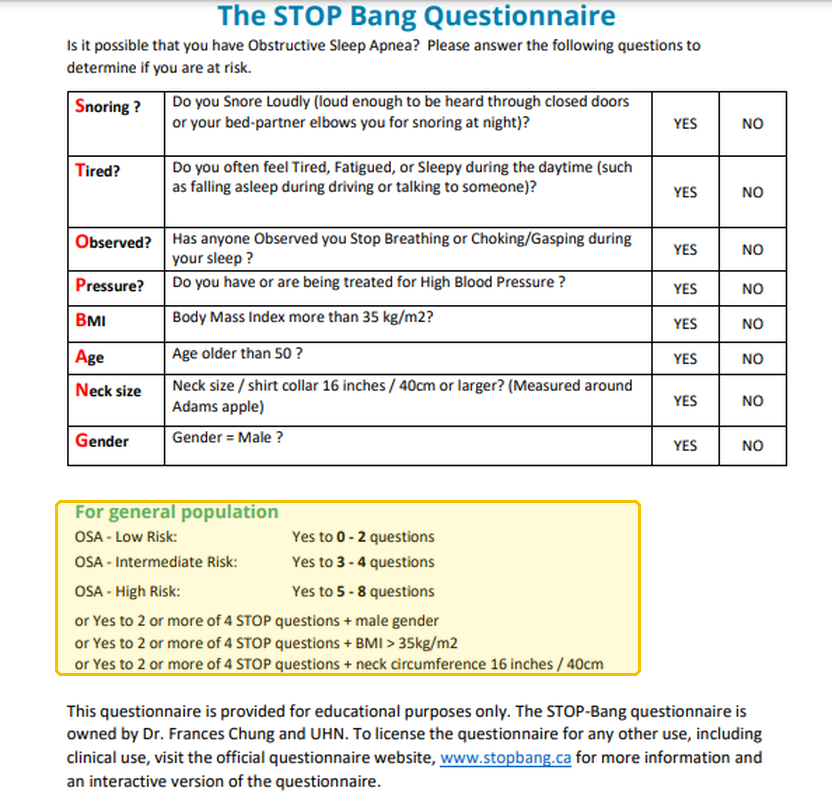 Not picturedPolysomnography: the slides show no tracing. | |||||||
| InfluenzaTop 10 most common · #2Tell-tale signSudden onset, over as little as a day, of fever (100–104 °F), cough, sore throat, myalgias and a frontal or retro-orbital headache, in the fall or winter. Clinical Medicine Lecture 37, slides 91, 99–101Typical age Severe influenza clusters at the extremes of age: children younger than 5 (especially younger than 2) and adults 65 or older. Clinical Medicine Lecture 37, slide 97A highly contagious airborne virus with a yearly fall-to-spring epidemic: 3–5 million cases and 250,000–500,000 deaths worldwide each year, and 3,000–49,000 United States deaths a year (1976–2006).Clinical Medicine Lecture 37 Respiratory Infections (Bobilin) · slides 4, 17, 28, 91, 95–97, 99–110, 114, 115 · Physical Diagnosis 2 Thorax slides 40, 42, 44, 52–55, 60 | “It hit me all at once yesterday — fever, my whole body aches, and my head hurts behind my eyes.” Or: “My throat is so sore, I’m completely wiped out, and I can’t stop coughing.” | Inspection: ill-appearing, red, watery eyes, pharyngitis, dry skin from mild volume depletion; nasal discharge is absent in most. The slides give no palpation, percussion or transmitted-voice-sound finding. Auscultation: wheezes or rhonchi. Vitals: fever of 100–104 °F and tachycardia from fever or hypoxia; rapidly progressive dyspnea with cyanosis signals influenza pneumonia. | Inspect the eyes, nose and pharynx, and the skin and mucosa for dryness. Measure temperature, heart rate, respiratory rate and oxygen saturation. Have the patient cough once or twice, then auscultate every lung field, front and back, for wheezes and rhonchi. Over any focal abnormality, palpate tactile fremitus, percuss for dullness, and test egophony, bronchophony and whispered pectoriloquy, the signs of pneumonia. |
| Rules it INOften a clinical diagnosis: suspicion alone justifies treatment in hospitalized, high-risk or progressively ill patients. Rapid molecular assay or reverse-transcription polymerase chain reaction → influenza detected; the preferred test. Rapid antigen test → positive antigen, but sensitivity is limited and a negative does not exclude influenza. Chest X-ray, to rule out pneumonia in elderly or high-risk patients → influenza pneumonia shows peribronchial and patchy interstitial infiltrates in multiple lobes with atelectasis.Rules the differentials OUTA negative rapid antigen test does not exclude influenza: confirm with a molecular test; the other viruses are listed without separating features. A positive coronavirus result on multiplex testing means COVID-19 (coronavirus disease 2019). Focal consolidation, hypoxemia, abnormal vital signs or infiltrates on the chest X-ray mean pneumonia, primary influenza or secondary bacterial. | Rest, hydration, and acetaminophen or ibuprofen for fever; no aspirin under 18 (Reye syndrome). Oseltamivir for hospitalized, severe or progressive and high-risk patients, pregnancy included, started promptly even after 48 hours. Baloxavir: one dose for uncomplicated influenza within 48 hours, age 5 or older, not in pregnancy or hospitalized patients. Avoid inhaled zanamivir in asthma or chronic obstructive pulmonary disease; amantadine and rimantadine are not recommended (resistance). Antibiotics only for proven or suspected bacterial pneumonia.ROUTINE — primary or urgent care, seen promptly so high-risk patients start an antiviral; return urgently for dyspnea, chest pain, dehydration, confusion or worsening after improvement. | Rest and drink fluids; the fever usually settles over several days, but cough and fatigue can linger. Use acetaminophen or ibuprofen, and never give aspirin to anyone under 18. It spreads through the air and is highly contagious. Get a flu vaccine every year, ideally in September or October; everyone 6 months and older without a contraindication qualifies. Return urgently for breathlessness, chest pain, dehydration, confusion, or getting worse after improving. |
Influenzathe tests, pictured 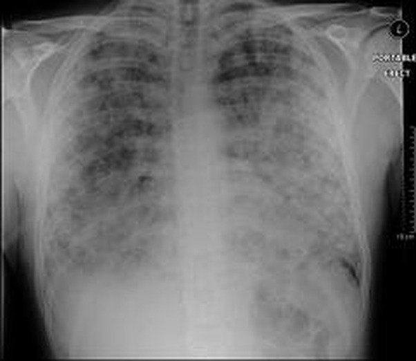 Not picturedRapid molecular test: no picture on the slides. | |||||||
| AsthmaTop 10 most common · #3Tell-tale signEpisodic wheeze, cough and chest tightness with symptom-free intervals, often worse at night or after a trigger, and a forced expiratory volume in 1 second that improves 12% or more after a bronchodilator. Clinical Medicine Lecture 35, slides 48, 53; Physical Diagnosis 2 Thorax slide 16Typical age Any age, with a peak age of presentation of 3 years; it may go quiet in adolescence and return in adulthood. In the United States it is most prevalent at 20–24 years (10.9%). Clinical Medicine Lecture 35, slides 12, 15Asthma affects 7.8% of adults and children in the United States and about 262 million people worldwide; it was the primary diagnosis in 1,009,419 United States emergency department visits in 2023.Clinical Medicine Lecture 35 Asthma (Finck) · slides 11, 19, 36, 40, 45, 48–57, 59–63, 67–72, 74, 75, 78, 83, 86, 88, 90, 91, 98–100, 103, 104 · Clinical Medicine Lecture 36 Chronic Obstructive Pulmonary Disease (Reynolds) · slides 26, 30, 31 · Physical Diagnosis 2 Thorax slides 16, 31, 33, 35, 40, 43, 44, 48, 49, 58, 63 | “My chest gets tight and I wheeze, mostly at night or around my roommate’s cat, and then I’m fine for weeks.” Or: “I can breathe in all right — it’s getting the air out that’s hard.” | Often normal between attacks; allergic patients may show nasal polyps or eczema. In an attack: tachypnea, retractions, accessory muscle use, leaning forward. Diminished tactile fremitus; percussion resonant to diffusely hyperresonant, decreased diaphragmatic excursion. Wheezes, possibly crackles, a prolonged expiratory phase; a severe attack may give only decreased breath sounds. The slides give no transmitted voice-sound finding. The thorax deck’s wheezing case: trachea midline, reduced symmetric expansion, respiratory rate 28, saturation 93%, heart rate 118. | Count the respiratory rate and note whether expiration lasts longer than usual; inspect for retractions and accessory muscle use, and the nose and skin for polyps and eczema. Check tracheal position, chest expansion and tactile fremitus. Percuss both sides and measure diaphragmatic excursion. Have the patient cough, then auscultate every zone; listen over the neck for inspiratory stridor and for a wheeze confined to one area. |
| Rules it INSpirometry before and after a short-acting bronchodilator → a reduced forced expiratory volume in 1 second and a reduced ratio to forced vital capacity, then an improvement of 12% or more (or 10% of predicted), which strongly supports asthma. Peak expiratory flow → morning reading before, afternoon reading after the bronchodilator; a 20% change between them or from day to day means poor control. Allergy skin or blood testing → identifies the allergen triggers.Rules the differentials OUTAn improvement of less than 12% after the bronchodilator means irreversible obstruction: chronic obstructive pulmonary disease. Stridor over the neck or a wheeze confined to one area points to the upper airway or a foreign body. A raised B-type natriuretic peptide or pulmonary edema on the chest radiograph points to heart failure. | Trigger avoidance and environmental control. Every patient carries a short-acting beta-2 agonist (albuterol) for rescue. Persistent asthma: a daily inhaled corticosteroid (fluticasone) first line, rinsing the mouth after each dose; add a long-acting beta-2 agonist (salmeterol), never on its own, or a leukotriene modifier (montelukast). Influenza and pneumococcal vaccines. Avoid aspirin and beta blockers. Exacerbation: oxygen, albuterol, ipratropium bromide and systemic corticosteroids.ROUTINE — primary care clinic, reassessing control in 2–6 weeks; emergency department when an attack brings peak flow below 40% of best, symptoms at rest, accessory muscle use or confusion. | Follow a written asthma action plan with green, yellow and red zones, and check your peak flow against your personal best. Use the inhaler with a spacer and rinse your mouth after the steroid inhaler. Take the controller every day: missed doses are the commonest reason for poor control. Needing the rescue inhaler more often means poorer control. Avoid your triggers and aspirin. |
Asthmathe tests, pictured 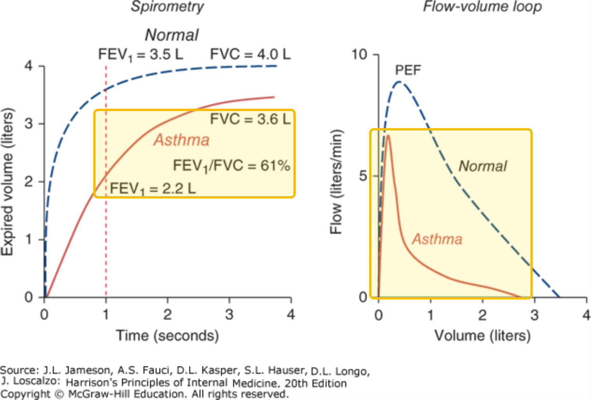 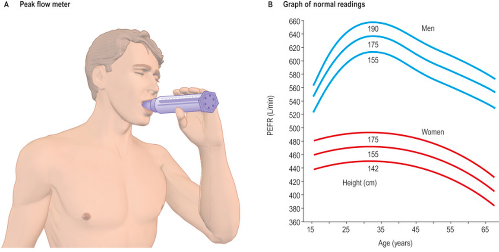 | |||||||
| Chronic obstructive pulmonary diseaseTop 10 most common · #4Tell-tale signA smoker with slowly progressive exertional dyspnea and chronic cough whose ratio of forced expiratory volume in 1 second to forced vital capacity stays below 0.70 after a bronchodilator. Clinical Medicine Lecture 36, slides 3, 16, 26; Physical Diagnosis 2 Thorax slide 16Typical age Symptoms often begin in midlife, but many patients are diagnosed only in later adulthood; disease before 45 should prompt testing for alpha-1 antitrypsin deficiency. Clinical Medicine Lecture 36, slides 8, 10Chronic obstructive pulmonary disease affects about 6% of Americans and was the third leading cause of death worldwide in 2023; underdiagnosis is very common, with many diagnosed only in later adulthood.Clinical Medicine Lecture 36 Chronic Obstructive Pulmonary Disease (Reynolds) · slides 3, 4, 8–10, 14, 16, 20–22, 26–28, 30–32, 34, 40, 42, 44, 46, 48–50, 55–59, 61–63 · Clinical Medicine Lecture 35 Asthma (Finck) · slide 53 · Clinical Medicine Lecture 41 Pulmonary Inflammatory Disease (Gray) · slides 33, 34 · Physical Diagnosis 2 Thorax slides 16, 34, 40, 42–44, 47, 48 | “I get winded just walking to the mailbox now, and every morning I cough up thick white-yellow phlegm.” Often: “I’ve smoked a pack and a half a day for 30 years.” | Vitals: respiratory rate above 20–30, saturation below 95% on room air, heart rate above 100. Barrel chest (anteroposterior ratio above 0.9), pursed-lip breathing, accessory muscles; cyanosis, rarely clubbing; neck veins distended in expiration; paradoxical lower intercostal retraction. Decreased tactile fremitus; generalized hyperresonance. Decreased, distant breath sounds with wheezes or crackles, rhonchi in chronic bronchitis; distant heart sounds. The slides give no tracheal or transmitted voice-sound finding. | Inspect the chest shape and estimate the anteroposterior diameter; watch for pursed lips, accessory muscles and lower intercostal retraction, look for cyanosis and clubbing, and check the neck veins during expiration. Palpate tactile fremitus and expansion. Percuss for hyperresonance and measure diaphragmatic excursion. Have the patient cough, then auscultate for diminished sounds, wheezes, crackles and rhonchi that clear with coughing; listen for heart sounds at the epigastrium and check for edema. |
| Rules it INSpirometry after a bronchodilator (albuterol) → a ratio of forced expiratory volume in 1 second to forced vital capacity below 0.70 confirms it, improving less than 12% (irreversible); the percent predicted sets grades 1–4. Chest radiograph → not diagnostic, but hyperlucent overinflated lungs, a flattened diaphragm, bullae. Alpha-1 antitrypsin (under 45 or nonsmoker) → below 11 micromol/L with a severe deficient genotype. Arterial blood gas (severe exacerbation) → carbon dioxide above 45 mmHg, raised bicarbonate.Rules the differentials OUTA bronchodilator response of 12% or more points to asthma. A raised B-type natriuretic peptide or pulmonary edema on the chest film points to heart failure. A normal ratio with a low forced vital capacity is possible restriction, confirmed with total lung capacity: the pulmonary fibrosis pattern. | Smoking cessation with counseling, plus nicotine replacement, bupropion or varenicline: the only treatment that slows progression. Yearly influenza and pneumococcal vaccines; pulmonary rehabilitation. Everyone carries albuterol. Group A: one bronchodilator; B: a long-acting beta agonist (salmeterol) plus long-acting muscarinic antagonist (tiotropium); E: both ± an inhaled corticosteroid, only in combination (salmeterol/fluticasone). Oxygen if arterial oxygen is below 55 mmHg or saturation below 88%. Exacerbation: bronchodilators, prednisone, oxygen, antibiotics (doxycycline) for purulent sputum.ROUTINE — primary care; over 80% of exacerbations stay outpatient, but admit for marked symptoms despite treatment, need for bilevel positive airway pressure, new edema or arrhythmia. | Stopping smoking is the one thing that slows the disease. Get the influenza vaccine every year and the pneumococcal vaccine. Let me check your inhaler technique; carry albuterol but do not overuse it. Pulmonary rehabilitation eases breathlessness and builds exercise tolerance. Seek care for worsening breathlessness, cough or sputum; recovery from a flare takes 4–6 weeks. |
Chronic obstructive pulmonary diseasethe tests, pictured 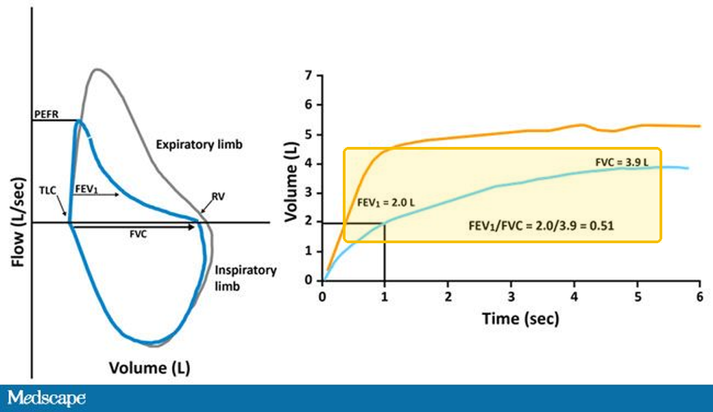 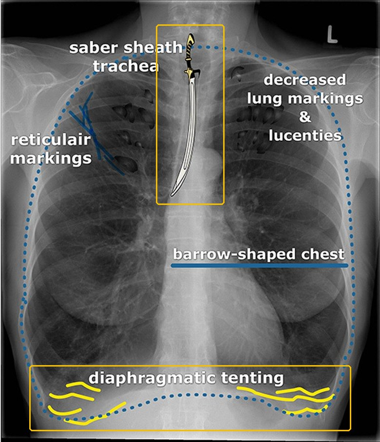 | |||||||
| Acute bronchitisTop 10 most common · #5Tell-tale signA cough, with or without colored mucus, that follows a cold, with normal vital signs and no consolidation on examination; any rhonchi clear with a cough. Clinical Medicine Lecture 37, slides 15–17Typical age Textbook, not on the slides: Any age, children and adults alike; one of the commonest reasons adults see a clinician for a cough.Usually a self-limited viral infection of the large airways that follows an ordinary cold, with a cough that commonly lasts 2–3 weeks or longer; the slides give no incidence figure.Clinical Medicine Lecture 37 Respiratory Infections (Bobilin) · slides 15–22, 27, 125 · Clinical Medicine Lecture 35 Asthma · slide 70 · Physical Diagnosis 2 Thorax slides 22, 40, 42, 44, 48, 53, 58 | “I had a cold last week, and now I’m coughing up green mucus — it’s worst in the morning.” Or: “My chest feels tight and sore from coughing, and there’s a tickle in the back of my throat.” | Inspection: cold signs such as pharyngeal injection and rhinorrhea. Palpation: chest wall or costochondral tenderness from coughing. The slides give no fremitus, expansion, percussion or transmitted-voice-sound finding, but no consolidation should be found; if it is, think pneumonia. Auscultation: central, substernal wheeze when airflow is limited, and subtle rhonchi that clear with cough. Vitals: low-grade fever; abnormal vital signs or hypoxemia point to pneumonia. | Inspect the pharynx and nose for viral signs; check temperature, respiratory rate and oxygen saturation. Auscultate centrally for substernal wheeze and at both lower lobes, coaching a deep breath: absent lower-lobe sounds mean severe airflow limitation, atelectasis or a shallow breath. Have the patient cough, then listen again, since mucus rhonchi clear. Press the chest wall and costochondral junctions. Search for consolidation with fremitus, percussion and egophony. |
| Rules it INThe diagnosis is clinical, after considering pneumonia, an asthma or chronic obstructive pulmonary disease exacerbation, influenza, COVID-19 (coronavirus disease 2019) and pertussis. Chest X-ray, only when vital signs, focal lung findings or risk raise concern for pneumonia → no consolidation, which separates bronchitis from pneumonia. A routine complete blood count and sputum culture are unnecessary, and a blood count cannot tell viral from bacterial.Rules the differentials OUTConsolidation on the chest X-ray, abnormal vital signs or hypoxemia → pneumonia. Paroxysms, whoop or post-tussive vomiting → targeted pertussis testing. Diffuse wheeze, prolonged expiration and known airway disease → an asthma or chronic obstructive pulmonary disease exacerbation. Test for influenza or COVID-19 (coronavirus disease 2019) only when the result will change treatment or infection prevention. | Explain the expected course and call it a “chest cold”; rest, hydration, no smoke or irritants; acetaminophen for fever or discomfort, checking combination products for duplicate acetaminophen; pelargonium may ease cough. No routine antibiotics, whatever the sputum color or duration: amoxicillin/clavulanate, clindamycin and fluoroquinolones (moxifloxacin) are not defaults, and a delayed “wait-and-see” prescription is an option. Avoid routine codeine cough suppressants and corticosteroids; a short bronchodilator trial (albuterol) for selected wheezing patients.ROUTINE — primary care, with no tests in uncomplicated cases; return for dyspnea, hemoptysis, persistent fever, hypoxemia, or worsening after initial improvement. | It is a chest cold, usually viral, and the cough commonly lasts 2–3 weeks. Green or yellow mucus does not mean you need antibiotics (the Physical Diagnosis 2 thorax lecture says yellow or green sputum is purulent and points to bacterial pneumonia); antibiotics do not shorten it and bring side effects, Clostridioides difficile infection and resistance. Rest, fluids, no smoke; check cold remedies for doubled acetaminophen. Return for breathlessness, coughing blood, persistent fever, or worsening. |
Acute bronchitisthe tests, pictured 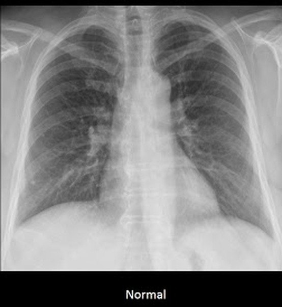 | |||||||
| Idiopathic pulmonary fibrosisTop 10 most common · #10Tell-tale signAn older smoker with an insidious dry cough, exertional dyspnea, clubbing and bibasilar inspiratory crackles, a restrictive pattern and pleural-based honeycombing on high-resolution computed tomography, with no cause found. Clinical Medicine Lecture 41, slides 31, 33–35Typical age Older adults: the no-biopsy diagnostic criteria apply to patients over 65. Clinical Medicine Lecture 41, slide 35The most common interstitial lung disease: a relative frequency of 55% among interstitial lung disease diagnoses, the most common diagnosis among those patients and the most common idiopathic subtype.Clinical Medicine Lecture 41 Inflammatory / Interstitial Lung Disease (Gray) · slides 4, 15, 18, 23–25, 29, 31–38, 55, 58, 65, 66, 69 · Physical Diagnosis 2 Thorax slides 12, 26, 40, 42, 44, 47 | “For the last year or so I get winded on the stairs, and I have this dry cough that just won’t quit.” Or: “I smoked for 40 years — now even carrying the groceries leaves me short of breath.” | Inspection: clubbing and tachypnea. Palpation: reduced chest expansion; tactile fremitus is decreased over fibrosis; the slides give no tracheal finding. Percussion: dull where fibrous tissue replaces air. Auscultation: bibasilar fine inspiratory crackles (“dry rales”). The slides give no breath-sound or transmitted voice-sound change. Vitals: tachypnea; early on the examination may be normal. | Inspect the fingertips for clubbing: lost angle between nail and proximal nail fold, a spongy nail bed. Test chest expansion side to side and palpate tactile fremitus; percuss both bases. Have the patient cough, then listen at the bases in mid to late inspiration for fine crackles and recheck after a change of position. Take the occupational, drug and smoking history. |
| Rules it INHigh-resolution computed tomography → diffuse, patchy fibrosis with pleural-based honeycombing. Pulmonary function testing → a restrictive pattern: decreased total lung capacity and forced vital capacity with a normal or increased ratio of forced expiratory volume in 1 second to forced vital capacity. Over 65, with no cause by history, inspiratory crackles and these findings, the diagnosis holds with 90% confidence and needs no surgical lung biopsy.Rules the differentials OUTAny associated cause means it is not idiopathic. A high antinuclear antibody points to connective tissue disease. Pleural plaques on computed tomography with asbestos exposure point to asbestosis. Serum antibodies to an inhaled agent give a definitive diagnosis of hypersensitivity pneumonitis. | Smoking cessation is critical to prolong life: smoking is the cause in the majority of cases. Beyond that, management is controversial: nothing has been shown to improve survival or quality of life compared with no treatment, so the goal is an accurate diagnosis that identifies who may benefit from the therapies available. Corticosteroids are listed only for other subtypes (cryptogenic organizing, lymphoid and nonspecific interstitial pneumonia). The slides name no drug and no referral for it.ROUTINE — clinic workup with high-resolution computed tomography and pulmonary function testing; review sooner if dyspnea comes at rest or right heart failure appears. | Stopping smoking is the most important step: smoking causes most cases, and quitting helps prolong life. The scarring is usually permanent, and no treatment has yet been shown to lengthen life or improve how you feel compared with none, so getting the exact diagnosis matters. Expect breathlessness on exertion to progress; tell us if it comes on at rest. |
Idiopathic pulmonary fibrosisthe tests, pictured 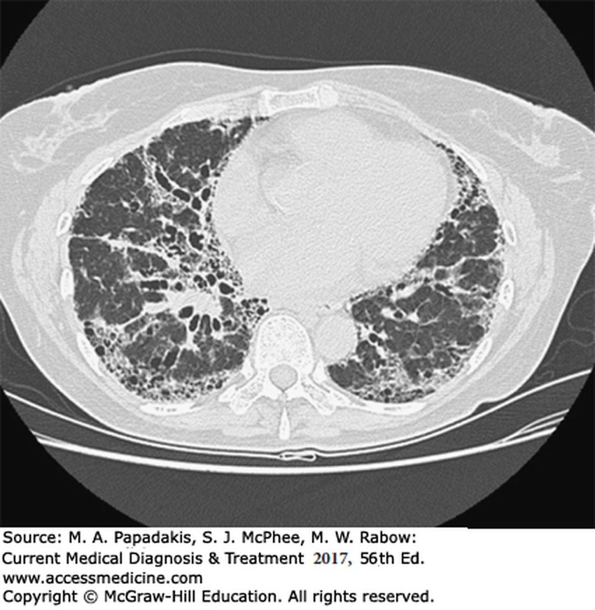 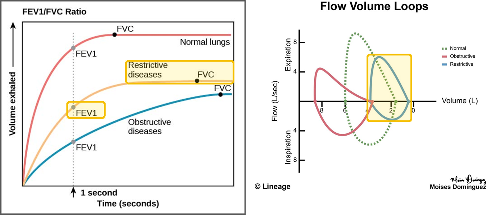 | |||||||
| PleurisyTop 5 non-emergent · #1Tell-tale signSharp, well-localized pain worse with a deep breath or cough, plus a pleural friction rub that disappears when the patient holds their breath. Clinical Medicine Lecture 44, slides 11, 12Typical age Textbook, not on the slides: Any age; it follows its cause, with viral pleurisy common in otherwise healthy younger adults.Pleuritic pain is a symptom with many causes — viral or bacterial infection, lupus, rheumatoid arthritis, trauma, pneumothorax, pulmonary embolism, cancer and drug reactions; the slides give no prevalence figure.Clinical Medicine Lecture 44 Pleural Disorders (Gray) · slides 9–14, 23 · Physical Diagnosis 2 Thorax slides 13, 14, 17, 40, 50 · Principles of Diagnostic Medicine Lecture 16, slides 5, 50 | “It’s a sharp, stabbing pain right here on my side, and it catches every time I take a deep breath, cough or sneeze.” Sometimes: “It goes up into my shoulder and neck on the same side.” | Inspection: tachypnea with limited expansion on the painful side, from splinting. Palpation and percussion depend on the underlying condition; the slides give no finding of pleurisy’s own. Auscultation: a pleural friction rub — grating, scratching or creaking, in both phases of breathing, that disappears when the breath is held, louder with firm stethoscope pressure and unchanged by coughing. The slides give no transmitted-voice-sound finding, and no vital-sign clue beyond tachypnea. | Have the patient point to the pain and say what worsens it. Palpate the chest wall for focal tenderness that reproduces the pain. Compare expansion side to side. Listen for a rub in the axilla and lower bases, press the stethoscope firmly, ask the patient to cough, then to hold their breath: a pleural rub stops, a pericardial rub continues. |
| Rules it INAuscultation → a pleural friction rub that disappears when the patient holds their breath and grows louder with firm stethoscope pressure. History → well-localized sharp or stabbing chest-wall pain made worse by deep breathing, coughing, movement or sneezing. No test confirms pleurisy itself: testing depends on the underlying condition.Rules the differentials OUTA rub that persists with the breath held, with PR depression and widespread concave ST elevation on the electrocardiogram, means pericarditis; reciprocal ST depression or any Q waves mean myocardial infarction must be considered. Sudden dyspnea with tachycardia and right axis deviation points to pulmonary embolism. Hyperresonance points to pneumothorax. | Treat the underlying condition, so first exclude the dangerous causes: myocardial infarction, pericarditis, aortic dissection, pneumonia, pneumothorax and pulmonary embolism. Then look for the listed causes: infection, systemic lupus erythematosus or rheumatoid arthritis, trauma, cancer, or a drug reaction to methotrexate, amiodarone or hydralazine. For the pain, a nonsteroidal anti-inflammatory drug.ROUTINE — clinic visit once the history and examination exclude the dangerous causes; follow-up then depends on the underlying condition. | The pain comes from inflamed pleural layers rubbing together as you breathe. It is a symptom, not a diagnosis, so we are looking for its cause. Take the anti-inflammatory as directed. Get emergency care for sudden breathlessness, coughing blood, fainting, a swollen leg, or crushing chest pressure. |
Pleurisythe tests, pictured Not picturedThe slides give pleurisy no test of its own: testing depends on the underlying condition (Clinical Medicine Lecture 44, slide 14), so there is no picture. | |||||||
| Obesity hypoventilation syndromeTop 5 non-emergent · #2Tell-tale signAn obese patient (body mass index over 30) with an awake arterial carbon dioxide above 45 mmHg and a raised bicarbonate that no other cause explains, usually with obstructive sleep apnea symptoms. Clinical Medicine Lecture 40, slides 30–32Typical age Often presents in the 50s and 60s; the subgroup with sleep hypoventilation is older women. Clinical Medicine Lecture 40, slides 29, 30Obesity hypoventilation syndrome becomes more likely as body mass index rises, and 90% of patients also have obstructive sleep apnea symptoms, 70% severe ones; the slides give no prevalence figure.Clinical Medicine Lecture 40 Obstructive Sleep Apnea and Obesity Hypoventilation Syndrome (Shah) · slides 6, 9, 15, 28–35 · Clinical Medicine Lecture 34 Acid-Base Part I (Finck) · slides 5, 21–23, 25, 27, 28 · Clinical Medicine Lecture 36 Chronic Obstructive Pulmonary Disease (Reynolds) · slides 12, 26, 31 · Physical Diagnosis 2 Thorax slide 29 | “I fall asleep the minute I sit down, I snore and choke at night, and I get out of breath just walking across the parking lot. My ankles have been swelling too.” | Inspection: obese (body mass index over 30) and hypersomnolent, with a thick neck, small oropharynx and facial plethora. Right heart failure signs: elevated jugular venous pressure, hepatomegaly, pedal edema. Hypercapnia may bring somnolence, confusion, asterixis or myoclonus. Chest: the slides give no palpation, percussion, breath-sound or transmitted voice-sound finding. Vitals: unexplained awake room-air saturation of 94% or less, or an overnight low below 80%. | Measure the body mass index and neck size, and inspect the oropharynx and the face for plethora. Record awake room-air pulse oximetry. Look at the jugular venous pressure, palpate for hepatomegaly and check the legs for pedal edema. Watch for somnolence, asterixis and myoclonus. Complete the lung examination — inspection, palpation, percussion, auscultation — looking for a lung cause of the hypercapnia, which must be excluded. |
| Rules it INArterial blood gas while awake → carbon dioxide above 45 mmHg, the chronic respiratory acidosis picture: low pH, raised bicarbonate as the kidneys retain it (normal 22–26 mEq/L), low chloride. Serum bicarbonate → above 27 makes it more likely and calls for the blood gas. Polysomnography with continuous nocturnal carbon dioxide monitoring → the gold standard (no cut-off given). Metabolic panel, blood count, thyroid tests, toxicology screen → no other cause found.Rules the differentials OUTAn awake carbon dioxide of 45 mmHg or less with obstructive events on the sleep study is obstructive sleep apnea alone. Pulmonary function tests with a post-bronchodilator ratio below 0.70, and hyperinflation on the chest radiograph, point to chronic obstructive pulmonary disease. A known neuromuscular disease accounts for the hypercapnia instead. | Multidisciplinary. First line: a weight loss program plus positive airway pressure — continuous positive airway pressure when obstructive sleep apnea coexists, bilevel positive airway pressure with sleep-related hypoventilation — and diet, exercise and behavioral change. Second line, if first line fails or is not tolerated: tracheostomy with nocturnal ventilation (very effective) or bariatric surgery; medications only after diet and exercise fail. Titrate oxygen carefully and avoid lowering the carbon dioxide too fast. Refer to a sleep specialist.ROUTINE — outpatient referral to a sleep specialist; late presenters in hypoxemic hypercapnic respiratory failure need hospital admission, often intensive care. | Weight loss is part of the treatment, together with positive airway pressure, the breathing machine. Left untreated, the condition tends to progress to pulmonary hypertension and right heart failure, and cardiovascular disease is the leading cause of death. Avoid alcohol and sedatives, which worsen sleep apnea. Keep your sleep specialist follow-up, and report ankle swelling or worsening breathlessness. |
Obesity hypoventilation syndromethe tests, pictured What is measuredWhat points to obesity hypoventilation syndrome PaCO2 (arterial carbon dioxide), awakeAbove 45 mmHg: awake alveolar hypoventilation Serum bicarbonateAbove 27: a higher chance of the syndrome; obtain an arterial blood gas Body mass indexAbove 30 Oxygen saturation94% or less awake without a reason, or a lowest overnight saturation under 80% Not picturedPolysomnography with continuous carbon dioxide monitoring: the slides show no tracing. | |||||||
| SarcoidosisTop 5 non-emergent · #4Tell-tale signSymmetric bilateral hilar and right paratracheal adenopathy on chest X-ray in a young adult with nontender lymphadenopathy, erythema nodosum or lupus pernio, confirmed by non-caseating granulomas on biopsy. Clinical Medicine Lecture 41, slides 40, 42–44Typical age Young adults: onset in the third and fourth decades, more often in women. Clinical Medicine Lecture 41, slide 40Sarcoidosis is 10% of interstitial lung disease; about 90% of patients have granulomatous lung inflammation, and it is more frequent in women and in North American Black and Northern European white people.Clinical Medicine Lecture 41 Inflammatory / Interstitial Lung Disease (Gray) · slides 15, 24, 26, 28, 39–48, 60, 62, 63 · Clinical Medicine Lecture 38 Mycobacterial Infections including Tuberculosis (Bobilin) · slides 16, 26, 28 · Physical Diagnosis 2 Thorax slide 30 | “I’ve had a cough and I get winded more easily for a few months, and now these painful red bumps came up on my shins.” Or: “I’m tired, I’ve lost weight, and there are lumps in my neck that don’t hurt.” | Inspection: erythema nodosum, lupus pernio (skin involvement) or parotid enlargement. Palpation: nontender lymph node enlargement and liver or spleen enlargement; the slides give no tactile fremitus, chest expansion or tracheal finding. Percussion: the slides give no percussion finding. Auscultation: crackles; no breath-sound or transmitted voice-sound change is given. Vitals: fever may be present; early on the examination may be normal. | Inspect the lower legs for erythema nodosum, the skin for lupus pernio, and look at and feel the parotid glands. Palpate every lymph node region for nontender enlargement. Palpate the abdomen for liver and spleen enlargement. Auscultate all lung fields, anterior and posterior, for crackles. Ask about eye, joint, heart and nervous-system symptoms, which change treatment. |
| Rules it INChest X-ray → symmetric bilateral hilar and right paratracheal adenopathy, with or without bilateral reticular infiltrates; stage I hilar adenopathy alone, II adenopathy plus parenchyma, III parenchyma alone, IV fibrosis with honeycombing. Angiotensin-converting enzyme → elevated in 40–80%; calcium → high in 5%. Transbronchial lung or fine-needle node biopsy → non-caseating granulomas confirm it.Rules the differentials OUTWhenever the picture suggests lymphoma, biopsy decides. Three sputum specimens for acid-fast smear, mycobacterial culture and a rapid molecular test → tuberculosis. A silica exposure history with eggshell hilar calcification, silicotic nodules and a thick, milky bronchoalveolar lavage → silicosis. | Oral corticosteroids, to which about 90% respond, for disabling constitutional symptoms, hypercalcemia, iritis or uveitis, arthritis, central nervous system, cardiac or liver involvement, skin lesions other than erythema nodosum, or progressive lung lesions. Intolerant or refractory: methotrexate, azathioprine or infliximab. Every year: physical examination, pulmonary function tests, chest X-ray, electrocardiogram, chemistry panel and an ophthalmologic evaluation.ROUTINE — outpatient workup in clinic with chest X-ray, laboratory studies and biopsy; then a yearly review including lungs, heart and eyes. | Most people respond to steroid treatment (about 90%). The outlook is best when only the chest lymph nodes are involved; about 1 in 5 people with lung involvement develop permanent lung damage. Keep the yearly check-ups, including an eye examination, because the disease can affect the eyes, heart, skin and nervous system. Report new eye, joint, heart or nervous-system symptoms. |
Sarcoidosisthe tests, pictured 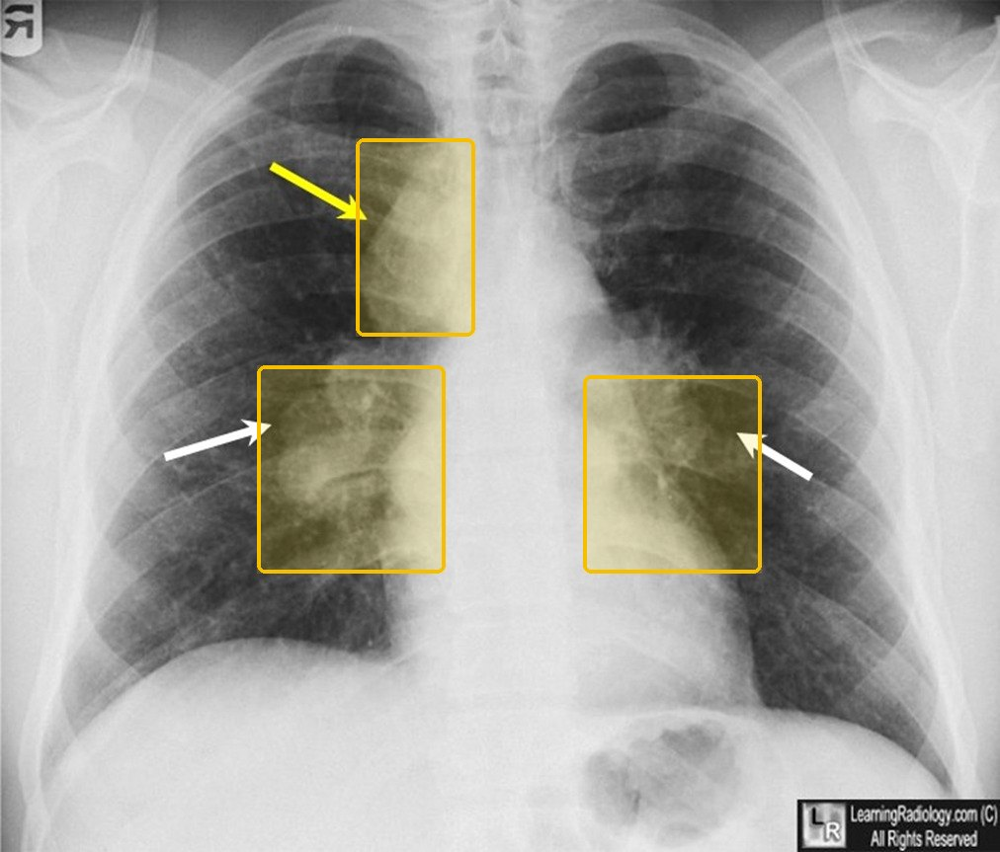 StageChest X-ray IBilateral hilar adenopathy alone IIHilar adenopathy and parenchymal involvement IIIParenchymal involvement alone (diffuse reticular infiltrates) IVAdvanced fibrosis: honeycombing, hilar retraction, bullae, cysts, emphysema | |||||||
| Hypersensitivity pneumonitisTop 5 non-emergent · #5Tell-tale signFever, chills, cough and dyspnea 4–8 hours after exposure to an organic dust (moldy hay, birds, feathers), with serum antibodies to the agent giving the definitive diagnosis. Clinical Medicine Lecture 41, slides 65, 66, 69Typical age Textbook, not on the slides: Adults of working age with an occupational or hobby exposure, most often diagnosed in middle age.Occupational and environmental exposures, the most common interstitial lung disease of known cause, account for 26% of interstitial lung disease; of hypersensitivity pneumonitis, 15% is subacute and 5% chronic.Clinical Medicine Lecture 41 Inflammatory / Interstitial Lung Disease (Gray) · slides 13, 15, 43, 44, 65–71, 73 · Clinical Medicine Lecture 35 Asthma (Finck) · slide 53 · Physical Diagnosis 2 Thorax slides 16, 33, 44, 47 | “Every evening after I clean out the pigeon lofts I get chills, a fever and a cough, and I’m short of breath.” Or: “It feels like the flu, but it hits me a few hours after I’ve been working in the hay barn.” | Inspection: tachypnea and cyanosis; clubbing and weight loss in chronic disease. Palpation: the slides give no tactile fremitus, chest expansion or tracheal finding. Percussion: the slides give no percussion finding. Auscultation: bibasilar crackles, fine crackles of interstitial pneumonitis; no breath-sound or transmitted voice-sound change is given. Vitals: fever, tachycardia, tachypnea and hypoxia. | Time the history: symptoms 4–8 hours after an exposure, often after work once home; ask about birds, feathers, moldy hay, sugarcane, grain and moldy products. Take the temperature, heart and respiratory rates, and inspect lips, tongue and oral mucosa for cyanosis. Have the patient cough, then listen at both bases for crackles. Inspect the fingers for clubbing. |
| Rules it INSerum antibodies to the agent → their presence gives a definitive diagnosis. Chest computed tomography → little change acutely; subacute and chronic, fibrotic changes and small nodular densities sparing the apices and bases. Lung biopsy (subacute or chronic) → interstitial lymphocytes and plasma cells with non-caseating granulomas. Complete blood count → white count raised with a left shift; pulmonary function → restrictive.Rules the differentials OUTSpirometry with reduced forced expiratory volume in 1 second that improves at least 12% after a bronchodilator → asthma. Orthopnea, edema, weight gain and known cardiac disease → left-sided heart failure. Chest X-ray with bilateral hilar adenopathy and an elevated angiotensin-converting enzyme → sarcoidosis. | Identify the agent responsible and avoid it: prompt diagnosis removes the patient from the environment, and symptoms can reverse if caught early, while continued exposure worsens the disease. Severe cases: corticosteroids may help, or other immunosuppressant medications. Supportive care: oxygen, bronchodilators and pain medications. Lung transplant. The slides name no specific corticosteroid, immunosuppressant, bronchodilator or pain medication.ROUTINE — clinic workup; the priority is removing the patient from the exposure promptly, before continued exposure worsens the disease. | Your lungs are reacting to something you breathe in at work or at home, such as birds, feathers, moldy hay or grain. Avoiding it is the treatment: caught early, the symptoms can reverse, but continued exposure may worsen the disease and scar the lungs. Note when symptoms start: a few hours after an exposure is the clue. |
Hypersensitivity pneumonitisthe tests, pictured 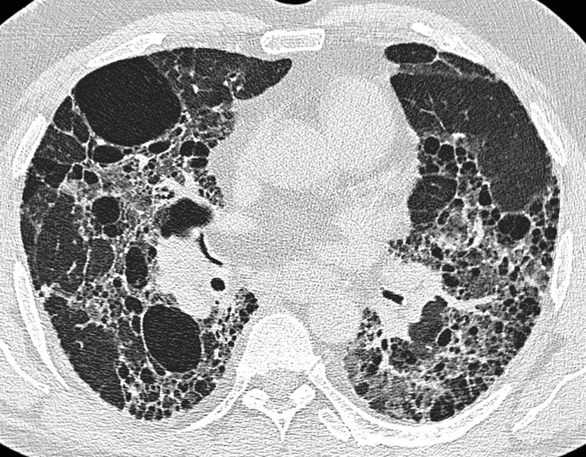 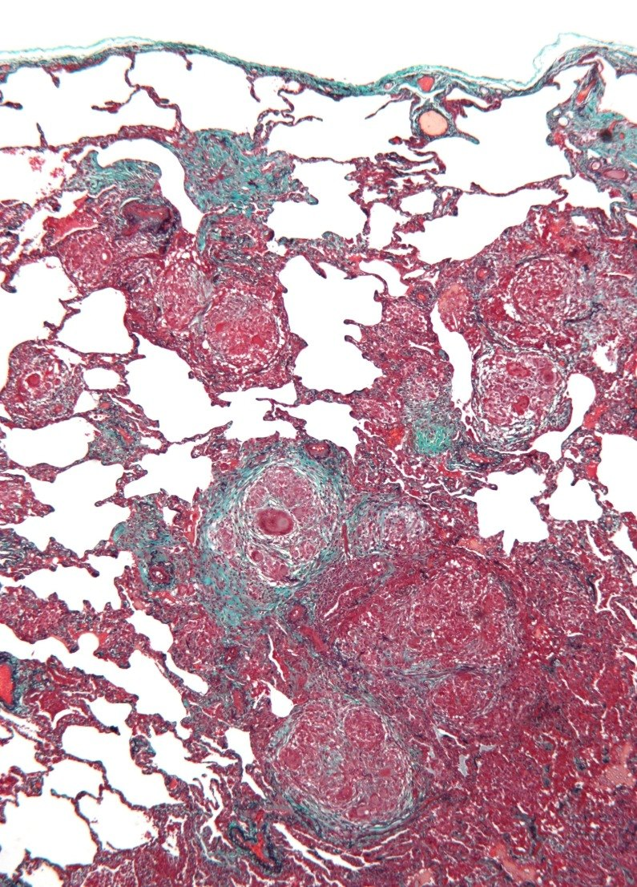 Not picturedPulmonary function: the restrictive pattern is pictured under idiopathic pulmonary fibrosis. | |||||||
Still outside the emergency department, but measured in days, not weeks, or treated the same day. The commonest way to get one of these wrong is to manage it correctly and too slowly.
| Condition | How the patient describes it the words they actually use |
What you see, feel and hear inspection, palpation, percussion, auscultation, the vitals clue |
Physical exams to rule it in or out the maneuvers, not the findings |
Top 3 differentials and what separates each one |
Tests — and what a positive looks like | Treatment & referral | Patient education |
|---|---|---|---|---|---|---|---|
| Pulmonary hypertension and cor pulmonaleTop 10 most common · #6Tell-tale signRight heart failure in a patient with chronic lung disease: raised jugular venous pressure, right ventricular heave and loud P2 (pulmonic valve closure), tender hepatomegaly and pitting edema, with lungs clear of crackles. Clinical Medicine Lecture 42, slides 5, 11, 22, 23Typical age Textbook, not on the slides: Chronic cor pulmonale: older adults with long-standing chronic obstructive pulmonary disease or interstitial lung disease. Idiopathic pulmonary arterial hypertension: most often women, typically 30 to 60 years old.Cor pulmonale is present in more than half of patients with chronic obstructive pulmonary disease, its leading cause; interstitial lung disease, sleep-disordered breathing and acute or unresolved pulmonary clot also drive it.Clinical Medicine Lecture 42 Pulmonary Vascular Disorders (Gray) · slides 4–6, 9–12, 14–16, 20–29, 39, 51, 61 · Clinical Medicine Lecture 36 Chronic Obstructive Pulmonary Disease (Reynolds) · slides 14, 44 · Physical Diagnosis 2 Thorax slide 42 · Principles of Diagnostic Medicine Lecture 14, slides 25, 28, 33–35 · Principles of Diagnostic Medicine Lecture 17, slide 61 | “I’ve used inhalers for years, but now I get winded walking to the mailbox, and I’m tired all the time.” Later: “My ankles are swollen, my belly feels full after a few bites, and I nearly passed out on the stairs.” | Inspection: raised jugular venous pressure with large a or v waves, dependent pitting edema, ascites, cool extremities, possible cyanosis. Palpation: right ventricular heave at the left sternal border, tender hepatomegaly. The slides give no fremitus, expansion, tracheal or voice-sound finding, and no percussion finding of its own (coexisting chronic obstructive pulmonary disease is hyperresonant). Auscultation: lungs typically clear; loud P2 (pulmonic valve closure), tricuspid regurgitation murmur, right ventricular S3 (third heart sound). Vitals: hypoxemia. | Measure the jugular venous pressure; press over the liver for hepatojugular reflux (positive if it rises more than 1 cm). Palpate the left sternal border for a parasternal lift and the liver edge for tenderness; look for ascites and pitting edema. Auscultate the heart for a loud P2 (pulmonic valve closure), tricuspid regurgitation murmur and right ventricular S3, then both lung fields: clear lungs point away from left heart failure. |
| Rules it IN12-lead electrocardiogram → peaked P waves (right atrial enlargement: P taller than 2.5 mm in a limb lead), tall R wave in V1 (right ventricular hypertrophy: R larger than S in V1–V2), right axis deviation (lead I negative, aVF positive). Echocardiogram (screening; one slide labels it the gold standard) → enlarged right ventricle, high estimated pulmonary pressure, D-shaped left ventricle. Right heart catheterization (confirmatory gold standard) → high mean pulmonary artery pressure, wedge 15 mmHg or less.Rules the differentials OUTWedge pressure above 15 mmHg on catheterization, or left-sided valve or muscle disease on echocardiogram → left heart failure. Mismatched segmental defects on a ventilation/perfusion scan → chronic thromboembolic pulmonary hypertension; do not rely on computed tomography angiography alone. Abrupt onset with shock, an S1Q3T3 pattern and clot on computed tomography pulmonary angiography → acute pulmonary embolism. | Treat the underlying lung disease. Continuous oxygen to keep arterial oxygen pressure above 60 mmHg reverses hypoxic vasoconstriction. Chronic obstructive pulmonary disease: bronchodilators (albuterol, tiotropium). Careful diuresis with a loop diuretic (furosemide) or spironolactone, avoiding over-diuresis and low potassium. Group 1 pulmonary arterial hypertension: early oral combination of an endothelin receptor antagonist (ambrisentan) and a phosphodiesterase-5 inhibitor (sildenafil); continuous intravenous epoprostenol if high risk. Supervised rehabilitation; lung transplant if refractory.URGENT — prompt outpatient work-up (echocardiogram, then right heart catheterization); emergency department for syncope, rapid decline or right heart failure at rest. | Oxygen is a medicine: wear it as prescribed, especially during sleep and exertion. Get the flu shot every year and the pneumococcal vaccines to prevent flare-ups. Stay active in a supervised rehabilitation program rather than resting in bed. Report fainting or near-fainting at once — it means the heart cannot keep up. Plan early: we will talk about your wishes for care. |
Pulmonary hypertension and cor pulmonalethe tests, pictured 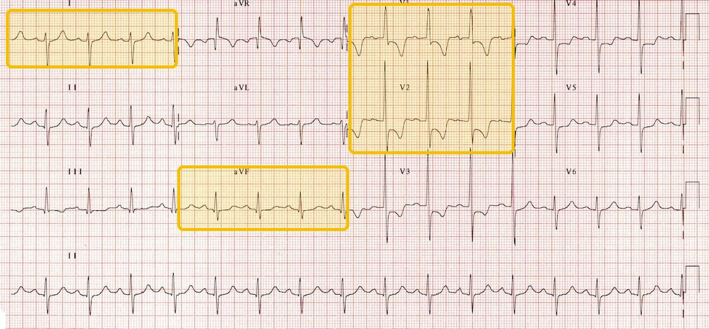 Not picturedEchocardiogram and right heart catheterization: no picture on the slides (the echocardiogram on Clinical Medicine Lecture 42, slide 14 is a drawing). The V/Q (ventilation/perfusion) scan is pictured under pulmonary embolism. | |||||||
| Pleural effusionTop 10 most common · #7Tell-tale signDullness with decreased fremitus and absent breath sounds over the same area, bronchial sounds near its top, and blunted costophrenic angles on the upright film. Clinical Medicine Lecture 44, slides 87, 88, 90Typical age Textbook, not on the slides: Mostly older adults, since its leading causes (heart failure, pneumonia, cancer) cluster in later life.Affects more than 1.5 million people a year in the United States, about 500,000 of them from congestive heart failure, which also causes over 90% of transudates.Clinical Medicine Lecture 44 Pleural Disorders (Gray) · slides 26, 41, 46, 83, 85–90, 96, 97, 99, 101, 102, 106, 108, 110, 111, 113, 114 · Physical Diagnosis 2 Thorax slides 30, 34, 40, 43, 52–55, 59–62 | “I get winded just walking to the mailbox, and I’ve got a dry cough. There’s a sharp pain on my right side when I breathe in deep, and it goes up into my shoulder.” Sometimes: “My ankles swell and I sleep propped up on pillows.” | Under 300 mL there are no examination findings. Inspection: asymmetric expansion; the trachea shifts away from an effusion over 1000 mL. Palpation: decreased tactile fremitus, increased toward the top of a large effusion. Percussion: dull over the fluid, with a high diaphragm. Auscultation: diminished or absent breath sounds, bronchial toward the top, possible friction rub; voice sounds decreased to absent, increased near the top. The slides give no vital-sign clue. | Examine the back with the patient sitting, arms folded across the chest. Inspect for asymmetric expansion and check that the trachea is midline. Palpate chest expansion and tactile fremitus side to side. Percuss down both sides to the dull level and measure diaphragmatic excursion, normally 3–5.5 cm. Auscultate breath sounds and for a rub, then test egophony, bronchophony and whispered pectoriloquy near the top of the dullness. |
| Rules it INUpright chest X-ray → blunted costophrenic angles: 75 mL of fluid blunts the posterior angle (lateral view), 175 mL the lateral angle (frontal view). Thoracentesis with pleural fluid analysis → exudate by Light’s criteria if at least one is met: fluid-to-serum protein ratio > 0.5, fluid-to-serum lactate dehydrogenase ratio > 0.6, or fluid lactate dehydrogenase > two-thirds of the upper limit of normal serum lactate dehydrogenase; none met means transudate. Also send white cell count, Gram stain, cytology and culture.Rules the differentials OUTIncreased fremitus, bronchial breath sounds and egophony over the dull area, with the trachea midline, mean pneumonia, and the film shows an infiltrate, not fluid. Dullness with the trachea pulled toward that side means atelectasis. A hyperresonant note means pneumothorax, confirmed by a visceral pleural line on the X-ray. | Treat the underlying disorder: for a heart-failure transudate, diuretic therapy first. Therapeutic thoracentesis removes fluid and relieves symptoms. Chest tube at the 4th or 5th intercostal space, midaxillary line. Recurrent malignant effusion: pleurodesis with a sclerosant such as talc or an indwelling tunneled pleural catheter drained at home. Empyema: drainage plus antibiotics. Chylothorax: octreotide and fewer long-chain triglycerides.URGENT — prompt upright chest X-ray, then diagnostic thoracentesis for any new effusion with no clinical cause. | Fluid has collected between the lung and the chest wall, and finding its cause (most often heart failure, pneumonia or cancer) guides treatment. The needle sample takes 50–100 mL for testing, and draining more eases the breathlessness. Fluid that keeps coming back from cancer can be managed with pleurodesis or a catheter drained at home. Return for worse breathlessness, fever or coughing blood. |
Pleural effusionthe tests, pictured 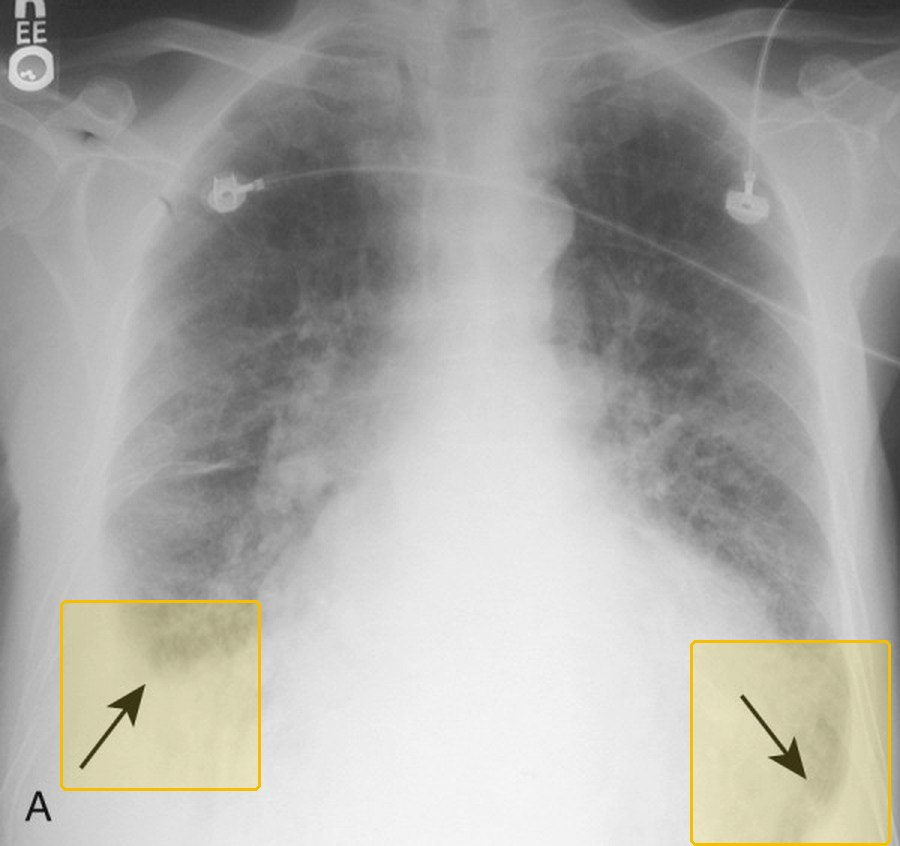 Light's criterionExudate when Pleural fluid protein / serum proteinMore than 0.5 Pleural fluid LDH / serum LDH (lactate dehydrogenase)More than 0.6 Pleural fluid LDHMore than two-thirds of the upper limit of normal serum LDH | |||||||
| Community-acquired pneumoniaTop 10 most common · #8Tell-tale signFever and cough with bronchial breath sounds plus egophony over one area (together more than triple the likelihood), dullness there, and consolidation on the chest X-ray. Physical Diagnosis 2 Thorax slide 54; Clinical Medicine Lecture 37, slides 28, 29Typical age Highest incidence over 65; young children and older adults are at higher risk, and age 65 or older scores a point on CURB-65 (confusion, urea, respiratory rate, blood pressure, age 65 or older). Clinical Medicine Lecture 37, slides 24, 28, 31Fairly common, at 24.8 cases per 10,000 adults a year and highest over 65; 15–20% are hospitalized, and influenza with pneumonia together is the 8th leading cause of death.Clinical Medicine Lecture 37 Respiratory Infections (Bobilin) · slides 4, 8–10, 16, 17, 24, 27–31, 33, 37, 38, 40, 43–45, 47, 125 · Physical Diagnosis 2 Thorax slides 40, 53–55, 59, 60, 62 · Principles of Diagnostic Medicine Lecture 17, slides 79–81 | “I’ve had a high fever and chills for two days, and I’m coughing up thick yellow phlegm.” Or: “There’s a stabbing pain in my right side every time I breathe in, and I get winded just walking to the bathroom.” | Inspection: ill-appearing, warm, diaphoretic, increased work of breathing; trachea midline. Palpation: increased tactile fremitus, unilateral decrease or delay in expansion. Percussion: dullness over the area, or at the base with an empyema. Auscultation: crackles and/or diminished sounds limited to one lobe, pleural rub with pleurisy (the Physical Diagnosis 2 thorax lecture says bronchial breath sounds over the area). Egophony, bronchophony, whispered pectoriloquy there. Vitals: fever, tachypnea; tachycardia, hypotension, hypoxia or confusion signal bacteremia or septicemia. | Watch the work of breathing and check that the trachea is midline. Palpate tactile fremitus and chest expansion, comparing sides. Percuss each lobe for dullness. Auscultate every lobe for crackles, diminished or bronchial sounds and a pleural rub. Over any abnormal area test egophony (“ee” heard as “a”), bronchophony and whispered pectoriloquy (“ninety-nine” louder). Score severity from mental status, respiratory rate, blood pressure and oxygen saturation. |
| Rules it INChest X-ray → consolidation confirms it: lobar pneumonia is a homogeneous lobar or segmental opacity with an air bronchogram and silhouette sign; bronchopneumonia is patchy. Chest computed tomography, when the film is equivocal, patchy, hidden by atelectasis or cavitary → consolidation. Oximetry → hypoxemia. CURB-65 (confusion, urea, respiratory rate, blood pressure, age 65 or older) → 0–1 low, 2 moderate, 3–5 high severity; the Pneumonia Severity Index plus judgment decides admission.Rules the differentials OUTNo consolidation on the chest X-ray with normal vital signs → acute bronchitis. A trachea pulled toward the dull side with absent breath sounds → atelectasis, which can hide the lower lobes and calls for computed tomography. Decreased fremitus with the trachea pushed away → pleural effusion, seen on chest X-ray or computed tomography. | Oxygen and respiratory support as needed, fluids, sepsis care. Outpatient, no comorbidities: amoxicillin or doxycycline; a macrolide (azithromycin) alone only where pneumococcal resistance is under 25%. Comorbidities: amoxicillin/clavulanate, cefpodoxime or cefuroxime plus azithromycin or doxycycline, or levofloxacin or moxifloxacin alone. Inpatient: ceftriaxone or ampicillin/sulbactam plus a macrolide (azithromycin), or a respiratory fluoroquinolone alone. Vancomycin or linezolid only for validated methicillin-resistant Staphylococcus aureus risk. At least 3 days if nonsevere, 5 if severe.URGENT — prompt assessment; the Pneumonia Severity Index plus judgment picks home or ward, shock or ventilation means intensive care now, and aim for antibiotics within 4 hours. | Take the antibiotic exactly as prescribed and keep the follow-up visit; if you get worse, the team rechecks the diagnosis and whether you took every dose. Come back promptly for worse breathing, confusion, or no improvement. Smoking and alcohol misuse raise the risk. Get a pneumococcal vaccine (Prevnar 20 or Capvaxive) at 50 or older, or younger with a risk condition such as smoking or diabetes, and a yearly influenza vaccine. |
Community-acquired pneumoniathe tests, pictured 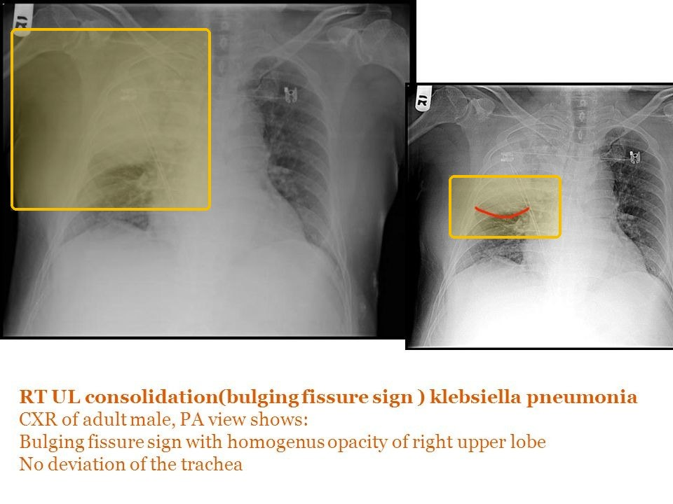 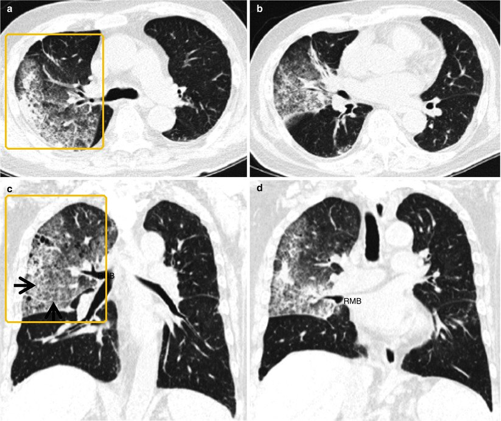 | |||||||
| Lung cancerTop 10 most common · #9Tell-tale signAn older smoker with a persistent cough, hemoptysis and weight loss, or a spiculated nodule over 6 mm that is growing or shows high uptake on positron emission tomography. Clinical Medicine Lecture 43, slides 3, 12, 16, 17Typical age Mostly over 50; about 4% occur under 40. Clinical Medicine Lecture 43, slide 3More than 200,000 new cases a year in the United States and 2 million worldwide; over 30% of cancer deaths in men and over 25% in women, with only 17–18% surviving five years.Clinical Medicine Lecture 43 Pulmonary Nodules and Neoplasms (Gray) · slides 3, 11–14, 16–19, 21, 22, 31, 35, 38–41, 43, 46, 48 · Clinical Medicine Lecture 37 Respiratory Infections (Bobilin) · slide 29 · Clinical Medicine Lecture 38 Mycobacterial Infections including Tuberculosis (Bobilin) · slides 16, 26, 28 · Physical Diagnosis 2 Thorax slides 17, 26, 34, 40, 42, 48, 59 | “I’ve smoked a pack a day for 35 years, and this cough won’t go away — now there’s blood in what I cough up.” Or: “I’ve lost weight without trying, and my back aches all the time.” | Often no findings until advanced. Inspection: clubbing; jaundice with liver spread. Palpation: asymmetric decreased fremitus over a neoplasm; trachea pulled toward a collapsed lung. Percussion: dull over tumor. Auscultation: a localized wheeze from tumor, or absent breath sounds where a blocked bronchus collapses the lung. The slides give no transmitted voice-sound finding. Vitals: weight loss, fever. | Inspect the fingers for clubbing and check that the trachea is midline. Palpate fremitus side to side for an asymmetric decrease, percuss for focal dullness, and auscultate for a localized wheeze. Look for spread: fundoscopy for papilledema and cranial nerve testing (brain), the liver edge (liver), bone pain and a neurologic examination for cord compression (bone). |
| Rules it INComputed tomography with contrast of the chest and upper abdomen → a nodule over 6 mm, spiculated, upper-lobe, enhancing or growing. Positron emission tomography (alone or with computed tomography) → high uptake of the radioactive sugar suggests malignancy. Biopsy by bronchoscopy, transthoracic needle or thoracoscopy → the tumor type. Sputum cytology → can catch central squamous cell, but is not sensitive. Metabolic panel with calcium → high calcium (squamous cell) or low sodium (small cell).Rules the differentials OUTBenign nodule: low or normal uptake; Fleischner tracking of a solid nodule: under 6 mm, no routine follow-up at low risk; 6–8 mm, computed tomography at 6–12 months; over 8 mm, consider computed tomography at 3 months, positron emission tomography or sampling. Sputum acid-fast smear and mycobacterial culture → tuberculosis. Chest X-ray confirms pneumonia. | Refer to pulmonology, thoracic surgery, interventional radiology or oncology; stage by tumor, node and metastasis. Non-small cell, stages I–IIIB: surgical resection (wedge or segment resection, lobectomy, pneumonectomy) if tolerated; chemotherapy and radiation as adjuncts or for stage IV; non-squamous non-small cell: checkpoint inhibitors (nivolumab, pembrolizumab, ipilimumab). Small cell: chemotherapy and radiation, prophylactic cranial irradiation, nivolumab or atezolizumab. Smoking cessation.URGENT — a suspicious nodule or symptoms need prompt computed tomography and specialist referral for biopsy and staging; most patients present only when advanced. | Most lung nodules are benign, but this one needs a scan and a sample to be sure. Stop smoking; it is implicated in 85–90% of cases. Screening: at 55–80 with at least a 30 pack-year history, still smoking or quit within 15 years, have a yearly low-dose chest computed tomography; it finds cancer early, but false positives can lead to unnecessary tests such as a biopsy. |
Lung cancerthe tests, pictured 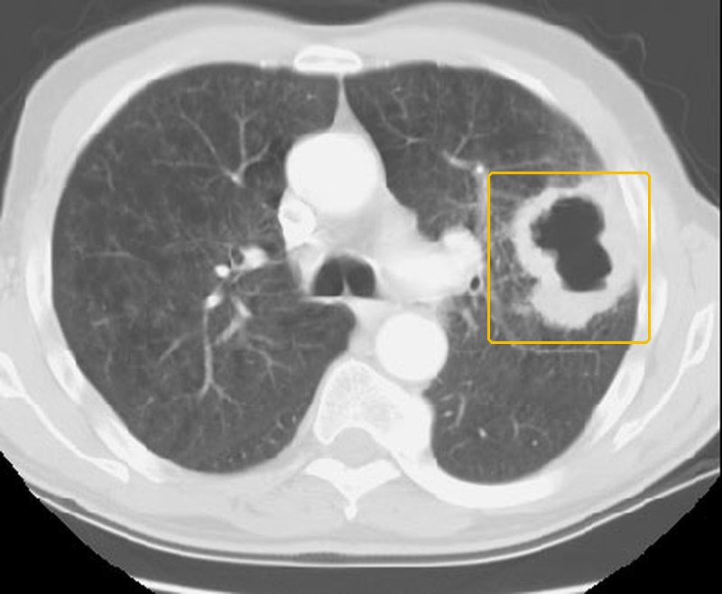 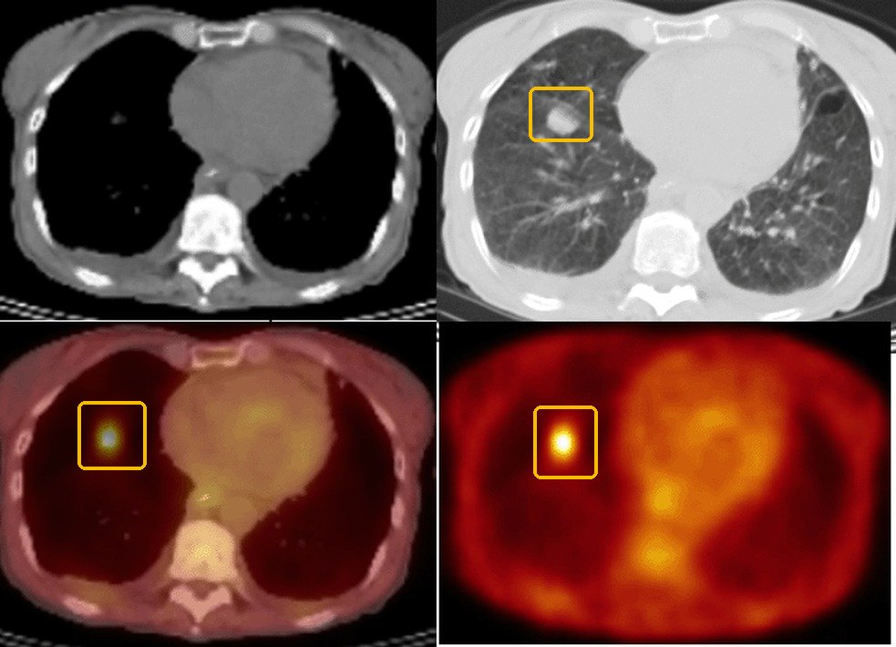 | |||||||
| Pulmonary tuberculosisTop 5 non-emergent · #3Tell-tale signA persistent cough with fever, night sweats and weight loss, sometimes hemoptysis, in someone with a tuberculosis risk (close contact, residence or travel where it is common, human immunodeficiency virus) and an upper-lobe cavity on the chest X-ray. Clinical Medicine Lecture 38, slides 14–16, 28, 32Typical age No peak age on the slides; infancy and young childhood raise the risk that infection progresses to disease, and children and older adults may present atypically. Clinical Medicine Lecture 38, slides 15, 17The leading cause of death from a single infectious agent: 10.7 million new cases and 1.23 million deaths worldwide in 2024, and 10,260 United States cases in 2025 (3.0 per 100,000), 77% in people born abroad.Clinical Medicine Lecture 38 Mycobacterial Infections including Tuberculosis (Bobilin) · slides 4, 6–8, 13–28, 30–38, 41 · Clinical Medicine Lecture 37 Respiratory Infections · slides 27, 53, 54 · Clinical Medicine Lecture 43 Pulmonary Nodules and Neoplasms · slides 14, 39 · Physical Diagnosis 2 Thorax slides 8, 39 | “I’ve had this cough for over a month, I’m soaking the sheets at night, and my clothes are hanging off me.” Or: “There was blood in what I coughed up this morning — and my roommate was just treated for tuberculosis.” | Inspection: wasting and, rarely, a chest-wall sinus tract. Palpation: lymphadenopathy, often painless. The slides give no fremitus, expansion, tracheal, percussion or transmitted-voice-sound finding. Auscultation: crackles or bronchial breath sounds. Vitals: fever. The examination has limited sensitivity: a normal examination does not exclude pulmonary tuberculosis, and children, older adults and immunocompromised patients may present atypically. | Put a mask on the patient and wear a fit-tested N95 respirator when tuberculosis is suspected. Weigh the patient. Inspect the chest wall for sinus tracts and palpate the lymph nodes for painless enlargement. Auscultate every lobe, including the apices 2–4 cm above the clavicles, since post-primary disease favors the upper lobes. Read a tuberculin skin test at 48–72 hours, measuring transverse induration in millimeters, not redness. |
| Rules it INTuberculin skin test → transverse induration, positive at ≥5 mm (HIV (human immunodeficiency virus), recent close contact, immunosuppression), ≥10 mm (exposure or medical risk, children under 5), ≥15 mm (no risk factors). Interferon-gamma release assay → positive; preferred after bacille Calmette-Guérin vaccination. Both show infection, not disease. Chest X-ray → upper-lobe infiltrates or cavities, though imaging cannot confirm it. Three sputum specimens → positive acid-fast smear, culture and rapid molecular test.Rules the differentials OUTA negative skin test or blood assay does not exclude disease; symptoms or suspicious imaging still need sputum testing. Molecular test or culture naming another species → nontuberculous mycobacterial disease. A cavity with an air-fluid level and foul-smelling sputum, with negative mycobacterial studies → lung abscess. A cavitating mass in a smoker → computed tomography and biopsy. | Isolate and report first. Drug-susceptible disease: isoniazid, rifampin, pyrazinamide and ethambutol for 2 months, then isoniazid and rifampin for 4 months, daily, by directly observed or video-observed therapy; ethambutol stops once susceptibility is confirmed. Eligible patients 12 or older: a 17-week rifapentine–moxifloxacin regimen. Review at least monthly, follow sputum cultures to conversion, watch for liver injury. Latent infection, only after disease is excluded: weekly isoniazid plus rifapentine for 3 months, or daily rifampin for 4 months.URGENT — immediate airborne isolation in an airborne infection isolation room, staff in fit-tested N95 respirators, and notify the local or state tuberculosis program. | Tuberculosis is preventable and curable. It spreads through the air when you cough, speak or sing, most in shared, poorly ventilated rooms, so wear a mask until the team ends isolation, which depends on your symptoms, tests and the health department, not a set number of days. Take every dose, often watched by video. Close contacts are tested, and an early negative test is repeated 8–10 weeks after the last exposure. |
Pulmonary tuberculosisthe tests, pictured 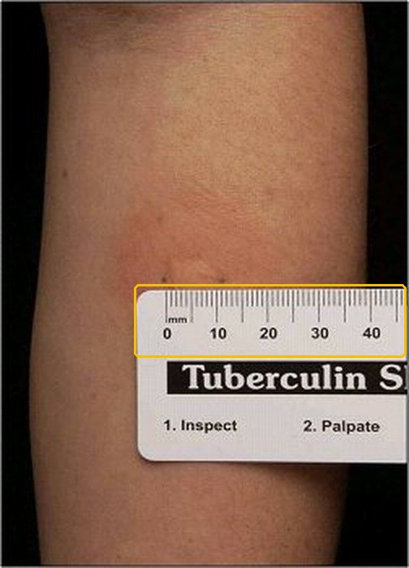 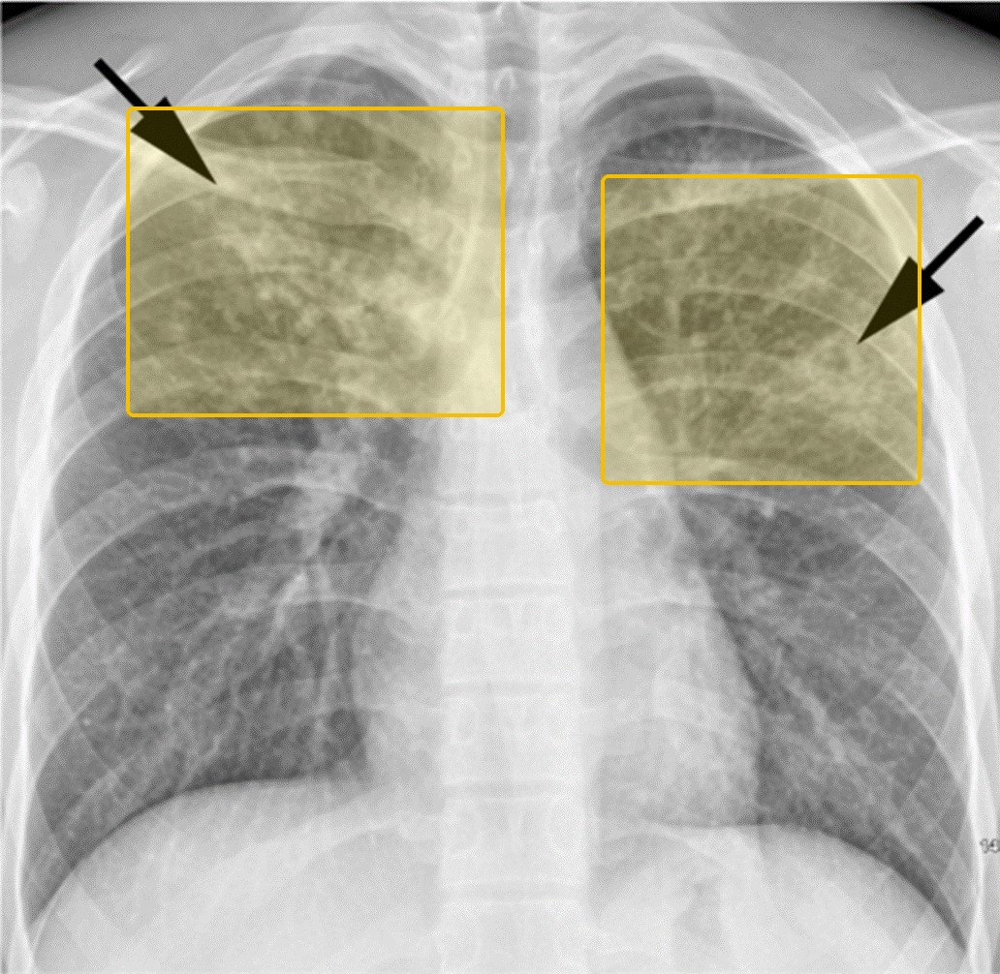 | |||||||
These do not wait for a clinic appointment. If the station gives you one of these, the answer to “what is your plan” begins with where the patient goes now, not with which test you would order.
| Condition | How the patient describes it the words they actually use |
What you see, feel and hear inspection, palpation, percussion, auscultation, the vitals clue |
Physical exams to rule it in or out the maneuvers, not the findings |
Top 3 differentials and what separates each one |
Tests — and what a positive looks like | Treatment & referral | Patient education |
|---|---|---|---|---|---|---|---|
| Acute cardiogenic pulmonary edemaTop 5 emergent · #1Tell-tale signSudden severe dyspnea with pink, frothy sputum, diffuse bilateral crackles and an S3 (third heart sound) gallop; the X-ray shows batwing opacities and Kerley B lines. Clinical Medicine Lecture 42, slides 35, 37, 46Typical age Adults and the elderly: in adults it is usually heart failure with reduced ejection fraction from ischemia; in the elderly, heart failure with preserved ejection fraction from age-related stiffening, with a narrow margin for diuresis. Clinical Medicine Lecture 42, slide 42The alveoli flood when capillary pressure overwhelms oncotic pressure; flash edema follows acute myocardial infarction, severe ischemia or severe hypertension, and survival depends on recognition and rescue at the bedside.Clinical Medicine Lecture 42 Pulmonary Vascular Disorders (Gray) · slides 32–43, 45, 46, 55 · Physical Diagnosis 2 Thorax slides 16, 42, 47 · Principles of Diagnostic Medicine Lecture 17, slide 82 | “I woke up gasping and had to sit on the edge of the bed. I’m coughing up pink, foamy spit.” Often: “I ran out of my water pill last week, and I’ve been eating a lot of salty food.” | Inspection: severe dyspnea, tripoding, diaphoresis, cyanosis and pink, frothy sputum. The slides give no palpation finding (fremitus, expansion, trachea) and no voice-sound finding. Percussion: none given for the edema itself; dullness only over any pleural effusions. Auscultation: diffuse bilateral crackles (coarse), rhonchi and expiratory wheezing, plus an S3 (third heart sound) gallop. Vitals: hypoxemia, and the blood pressure may be severely high; tachycardia is listed among the signs it shares with its mimics. | Watch the patient sit upright: work of breathing, tripoding, color and sputum. Ask about orthopnea and paroxysmal nocturnal dyspnea. Check oxygen saturation, heart rate and blood pressure. Auscultate all lung fields for crackles, rhonchi and wheezes, and the heart for an S3. Percuss the bases for the dullness of effusions. Look for leg edema and recent weight gain. |
| Rules it INChest X-ray → batwing (butterfly) perihilar opacities, peribronchial cuffing, Kerley B lines and bilateral pleural effusions, with cephalization of vessels and an increased cardiothoracic ratio. B-type natriuretic peptide → substantially elevated, separating cardiogenic dyspnea from lung mimics. Echocardiogram → an enlarged or poorly pumping ventricle (low ejection fraction) or a valve lesion. Pulmonary capillary wedge pressure → above 18–20 mmHg confirms it. Oximetry → hypoxemia.Rules the differentials OUTWedge pressure 18 mmHg or less with normal heart function → noncardiogenic edema (acute respiratory distress syndrome, sepsis, toxins, altitude). Clear lungs on X-ray, a normal B-type natriuretic peptide and S1Q3T3 → pulmonary embolism, confirmed on computed tomography pulmonary angiography. Wheezing, hyperinflation and hypercapnia on arterial blood gas with a normal B-type natriuretic peptide → chronic obstructive pulmonary disease exacerbation. | Sit the patient upright, legs dangling. The LMNOP rescue: Loop diuretic intravenously (furosemide, bumetanide, torsemide); Morphine only with caution (respiratory depression); Nitrates intravenously to cut preload and afterload; Oxygen with upright positioning; Positive airway pressure (noninvasive ventilation). Continue an oral beta-blocker unless in shock. Older patients need gentle, precise diuresis. Afterward, quadruple therapy: sacubitril-valsartan, a beta-blocker, a mineralocorticoid receptor antagonist and a sodium-glucose cotransporter-2 inhibitor.EMERGENT — call 911; emergency department now for oxygen, noninvasive ventilation and intravenous diuretic and nitrate, with continuous monitoring. | Take your heart medicines every day: flare-ups come from missed doses, too much salt or a fast heart rhythm. Long-term quadruple therapy lowers the risk of dying and of another episode. Diuretic changes need close follow-up, especially in older adults: too much drops the blood pressure, too little lets fluid build up. Call 911 for sudden breathlessness, pink frothy sputum or being unable to lie flat. |
Acute cardiogenic pulmonary edemathe tests, pictured 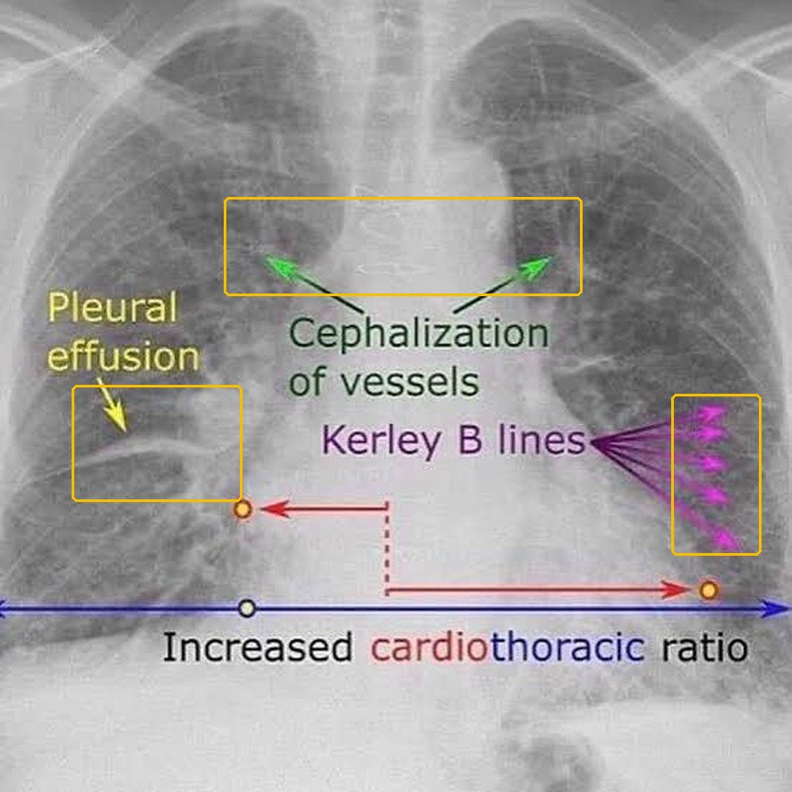 Not picturedB-type natriuretic peptide, echocardiogram and wedge pressure: no real tracing or scan on the slides (Clinical Medicine Lecture 42, slide 38 has only an illustrated graph). | |||||||
| Pulmonary embolismTop 5 emergent · #2Tell-tale signSudden dyspnea with pleuritic pain or hemoptysis in a patient with a clot risk (recent surgery, immobilization, estrogen, cancer), plus one swollen leg or a heart rate above 100. Clinical Medicine Lecture 42, slides 49, 50, 53Typical age No typical age is given; age under 50 is one of the eight Pulmonary Embolism Rule-out Criteria, so a patient 50 or older cannot be cleared by that rule. Clinical Medicine Lecture 42, slide 54Venous thromboembolism ranges from silent disease to hemodynamic collapse and death; massive embolism with sustained hypotension carries high mortality, and about 25% of proven cases have no dyspnea.Clinical Medicine Lecture 42 Pulmonary Vascular Disorders (Gray) · slides 10, 14, 15, 43, 48–62 · Physical Diagnosis 2 Thorax slides 17, 50, 60, 61 · Principles of Diagnostic Medicine Lecture 16, slide 50 · Principles of Diagnostic Medicine Lecture 17, slides 61, 62, 78, 84 | “I flew home from overseas two days ago. This morning I suddenly couldn’t catch my breath, it hurts to take a deep breath, and I coughed up a little blood. My left calf is swollen.” | Inspection: one swollen leg (deep venous thrombosis); in massive embolism, distended neck veins, pallor or syncope. The slides give no fremitus, expansion, tracheal, percussion or voice-sound finding. Auscultation: a localized pleural friction rub over an infarct; a tricuspid regurgitation murmur when massive. Vitals: heart rate above 100, oxygen saturation 94% or less, and in massive embolism systolic pressure below 90 for over 15 minutes. | Take heart rate, oxygen saturation and blood pressure, and score the Wells criteria and the Pulmonary Embolism Rule-out Criteria: age, hemoptysis, estrogen, prior clot, recent surgery or trauma. Compare both legs for unilateral swelling and other signs of deep venous thrombosis. Inspect the neck veins. Auscultate the axillae and lower bases for a pleural rub, then have the patient hold a breath: a rub stops. Listen for a tricuspid regurgitation murmur. |
| Rules it INWells score → above 4, embolism likely: go straight to imaging. D-dimer → positive sends you to imaging. 12-lead electrocardiogram → tachycardia, rightward axis, ST-segment and T-wave changes and S1Q3T3 (deep S wave in lead I, Q wave and inverted T wave in lead III: highly specific, low sensitivity); abnormal in 70%. Computed tomography pulmonary angiography, first-line → clot in a pulmonary artery. Ventilation/perfusion scan → multiple segmental mismatched perfusion defects, high probability.Rules the differentials OUTVery low suspicion with all eight Pulmonary Embolism Rule-out Criteria met, or Wells 4 or less with a negative highly sensitive D-dimer → stop, embolism excluded (outpatients only). Hyperresonance with absent breath sounds → pneumothorax on chest X-ray. Focal consolidation signs → pneumonia on chest X-ray. High B-type natriuretic peptide with Kerley B lines → cardiogenic edema. | Anticoagulate everyone, starting at diagnosis or on high suspicion while imaging is pending. Provoked (surgery, trauma, estrogen): consider stopping at 3 months; unprovoked or persistent risk (cancer, hypercoagulable state): indefinite. Massive (hypotensive): systemic or catheter-directed thrombolysis, the gold standard, with volume expansion; if thrombolytics are contraindicated (recent surgery, active bleeding) or clot is in transit, mechanical thrombectomy or surgical embolectomy. Thrombolysis in submassive embolism is controversial. Screen for chronic thromboembolic pulmonary hypertension if dyspnea persists at 3 months.EMERGENT — emergency department now (911 if syncope or hypotension); stratify with blood pressure, echocardiogram (D-shaped septum, right ventricular strain) and troponin or B-type natriuretic peptide. | Take the blood thinner exactly as prescribed, every day; how long depends on the cause — often 3 months after surgery, injury or estrogen, possibly lifelong with cancer or no clear cause. Estrogen, flights over 8 hours and bed rest raise the risk. Come back if breathlessness lasts beyond 3 months. Call 911 for fainting, sudden breathlessness, pain on breathing or coughing blood. |
Pulmonary embolismthe tests, pictured 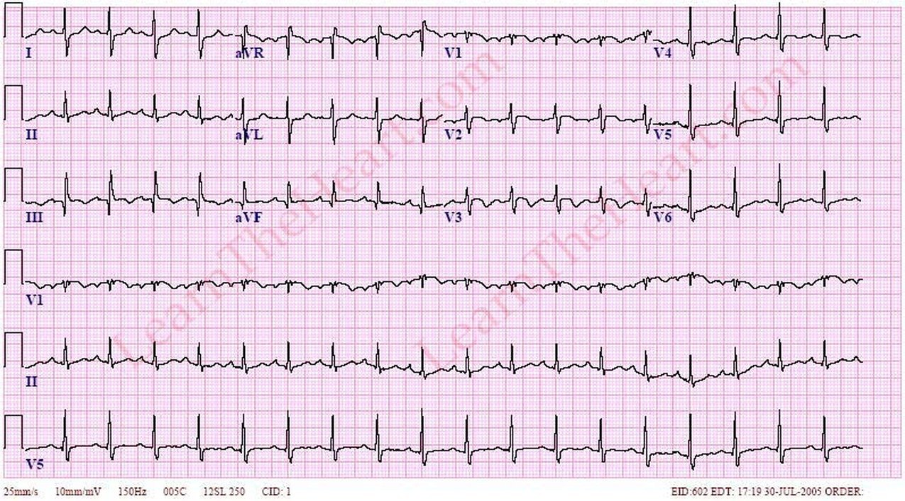 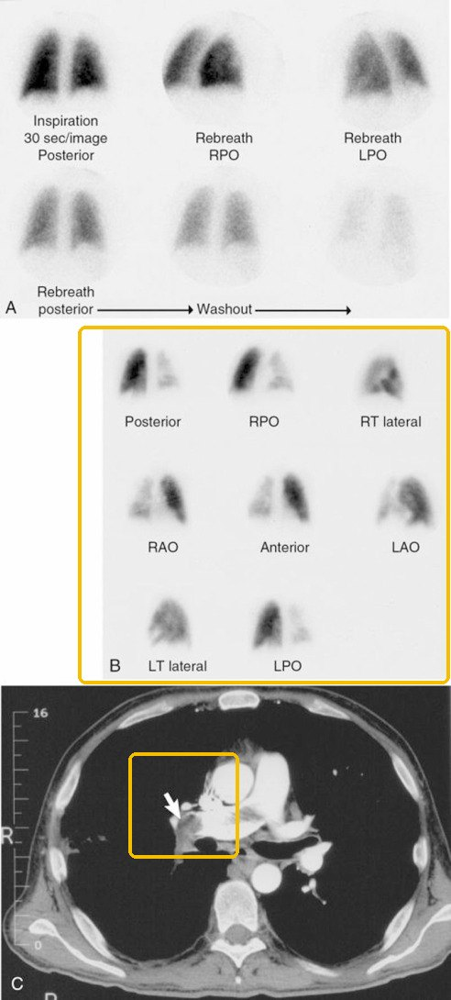 | |||||||
| Acute respiratory distress syndromeTop 5 emergent · #3Tell-tale signNew bilateral opacities with hypoxemia refractory to supplemental oxygen within 7 days of a known insult (sepsis, aspiration, pneumonia, trauma), with a normal-sized heart. Clinical Medicine Lecture 41, slides 72, 73Typical age Textbook, not on the slides: Any adult age with a triggering illness; incidence and mortality rise with older age.About 30% mortality even with low tidal volume ventilation, ranging from 20% after trauma to 80% in end-stage liver disease; about one-third of cases first present with sepsis.Clinical Medicine Lecture 41 Inflammatory / Interstitial Lung Disease (Gray) · slides 19, 25, 72–74 · Clinical Medicine Lecture 37 Respiratory Infections (Bobilin) · slide 29 · Physical Diagnosis 2 Thorax slides 17, 30, 31, 33–35, 40 | “I was admitted for my pancreas, and since yesterday I can’t catch my breath at all, even with the oxygen on.” Or, from family: “He breathed in vomit when he passed out, and now he’s gasping.” | Inspection: tachypnea, labored breathing and intercostal retractions. Palpation: the slides give no tactile fremitus, chest expansion or tracheal finding. Percussion: the slides give no percussion finding. Auscultation: crackles; no breath-sound or transmitted voice-sound change is given. Vitals: tachypnea and marked hypoxemia refractory to supplemental oxygen; signs of multiple organ failure (kidneys, liver, gut, central nervous system, cardiovascular system). | Observe the rate, rhythm, depth and effort of breathing. Look for accessory muscle use and intercostal retraction, and for cyanosis of lips, tongue and oral mucosa. Test expansion and fremitus side to side. Auscultate anterior and posterior fields, supine or rolling the patient if they cannot sit, for crackles. Check oxygen saturation on the oxygen being given. |
| Rules it INArterial blood gas → ratio of arterial oxygen pressure to fraction of inspired oxygen under 300 mm Hg (or oxygen saturation to inspired fraction under 315), graded mild 200–300, moderate 100–200, severe under 100. Chest X-ray → new bilateral opacities not explained by effusion, atelectasis or nodules, with a normal heart size. Echocardiogram → cardiac function that does not explain the edema. All within 7 days of a known insult.Rules the differentials OUTCardiomegaly, vascular engorgement and batwing perihilar opacities on the chest X-ray, or a cardiac cause on the echocardiogram → cardiogenic pulmonary edema. Cultures, obtained in severe community-acquired pneumonia → severe bilateral pneumonia. Anti-glomerular basement membrane antibodies → Goodpasture syndrome with diffuse pulmonary hemorrhage. | Treat the precipitating insult promptly. Ventilate with low tidal volumes; titrate positive end-expiratory pressure to keep arterial oxygen above 60 mm Hg; early prone positioning cuts mortality in moderate to severe disease; avoid high-frequency oscillatory ventilation. Conservative fluids (central venous pressure under 4 mm Hg); transfuse at hemoglobin 7 g/dL. Corticosteroids are conditionally supported within 14 days; sedatives, analgesics and antipyretics reduce oxygen demand; extracorporeal membrane oxygenation for refractory cases.EMERGENT — intensive care unit care with mechanical ventilation; profound dyspnea develops 12–48 hours after the insult. | This is a lung injury set off by another illness, not a heart problem: the air sacs leak and collapse, so extra oxygen alone cannot fix the low levels. The breathing machine, lying face-down and careful fluids protect the lungs. Recovery is slow: lung function improves over 6–12 months, but weakness, fatigue and some lung deficits often remain, so rehabilitation follows. |
Acute respiratory distress syndromethe tests, pictured 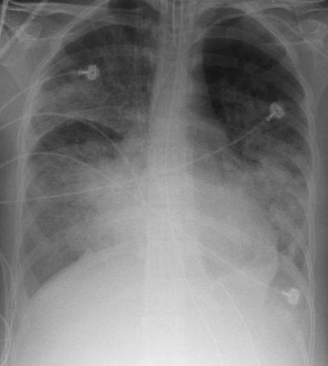 SeverityPaO2/FiO2 (arterial oxygen over the fraction of inspired oxygen) Mild200 to 300 mmHg Moderate100 to 200 mmHg SevereUnder 100 mmHg Not picturedEchocardiogram: no picture on the slides. | |||||||
| PneumothoraxTop 5 emergent · #4Tell-tale signSudden one-sided pleuritic pain and dyspnea with hyperresonance and absent breath sounds and fremitus on that side; add hypotension, tracheal deviation and distended neck veins for tension. Clinical Medicine Lecture 44, slides 21–23, 64Typical age Primary spontaneous: 20–40 years, classically tall, thin young men; secondary spontaneous comes with underlying lung disease, most often chronic obstructive pulmonary disease. Clinical Medicine Lecture 44, slides 19, 20Collapses part or all of a lung; a secondary pneumothorax can be life-threatening through lost pulmonary reserve, and a tension pneumothorax cuts venous return and cardiac output, causing hypotension.Clinical Medicine Lecture 44 Pleural Disorders (Gray) · slides 16, 17, 19–23, 25–30, 33, 34, 51, 53, 55, 57, 59–61, 63, 64, 66–68 · Physical Diagnosis 2 Thorax slides 4, 7, 14, 17, 40, 61, 64 · Principles of Diagnostic Medicine Lecture 16, slides 5, 50 | “I was sitting at my desk when a sudden, stabbing pain hit the right side of my chest, and now I can’t catch my breath — it’s worse when I breathe in.” After a fall: “I landed on my ribs, and now I can barely breathe.” | Inspection: tachypnea, decreased expansion on the affected side. Palpation: decreased or absent tactile fremitus; trachea midline in a simple pneumothorax. Percussion: hyperresonant, or tympanic. Auscultation: diminished or absent breath sounds and voice sounds on that side; possible pleural rub. Vitals: tachycardia. Tension: trachea deviated to the other side, hypotension, distended neck veins. | Count the respiratory rate and check the stability criteria: respiratory rate under 24, heart rate 60–120, normal blood pressure, room-air saturation over 90%, whole sentences. Watch both sides move, and check the trachea and neck veins. Palpate expansion and tactile fremitus side to side. Percuss both sides, then compare breath and voice sounds. Ask about trauma, a recent procedure and prior pneumothorax. |
| Rules it INUpright chest X-ray → a thin, sharp visceral pleural line, convex toward the chest wall, with no lung markings beyond it; 3 cm or more from apex to cupola is large; supine, a deep, dark costophrenic angle, the deep sulcus sign. Chest computed tomography → best for presence, size and location, and shows blebs and bullae, but impractical when time is critical. Tension is a clinical diagnosis: no time for the X-ray.Rules the differentials OUTHemoptysis, syncope or one-sided leg symptoms, with tachycardia and right axis deviation on the electrocardiogram, point to pulmonary embolism. Exertional retrosternal pressure, with reciprocal ST depression or Q waves, points to myocardial infarction. Tearing pain into the back points to aortic dissection. | Tension: immediate chest tube, or needle decompression at the 2nd intercostal space, over the 3rd rib, midclavicular line, then a chest tube and admission. Chest tube: 4th or 5th intercostal space, midaxillary line, in the triangle of safety, just above the rib. Small primary: observation, analgesia, 100% oxygen by non-rebreather, repeat X-ray in 6–12 hours. Large or secondary: chest tube. Recurrent: video-assisted thoracoscopic surgery with pleurodesis.EMERGENT — emergency department now; tension needs decompression before any imaging, and bedside ultrasound showing absent lung sliding helps in the unstable patient. | Recurrence approaches 50% within three years of a first spontaneous pneumothorax, so come back at once for sudden chest pain or breathlessness. Stop smoking: it raises recurrence risk up to 100-fold. Delay air travel 7–14 days after an X-ray confirms resolution, and avoid scuba diving. Video-assisted surgery with pleurodesis best prevents recurrence. |
Pneumothoraxthe tests, pictured 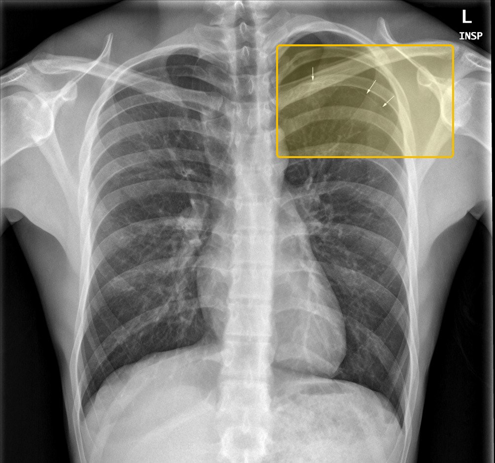 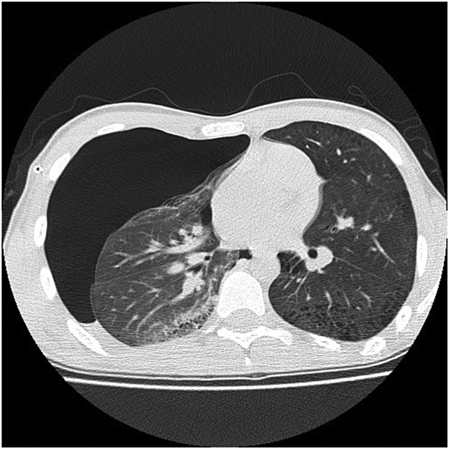 | |||||||
| HemothoraxTop 5 emergent · #5Tell-tale signChest trauma with fluid that is dull to percussion; on the film a straight air-fluid line with no meniscus when air is present too, and pleural fluid hematocrit over 50% of the blood’s. Clinical Medicine Lecture 44, slides 69, 71, 74; Physical Diagnosis 2 Thorax slide 42Typical age Textbook, not on the slides: Any age; most patients are trauma victims, most often young adult men.Bleeding into the pleural space, most often from trauma to the heart, vessels, lung, or the intercostal, pulmonary or internal thoracic arteries; persistent hemorrhage or shock needs surgery, and chest tube blood loss over 200 mL an hour means thoracotomy.Clinical Medicine Lecture 44 Pleural Disorders (Gray) · slides 23, 64, 66, 69–74, 83, 87, 88, 105 · Physical Diagnosis 2 Thorax slides 4, 7, 39, 40, 42 | “I was stabbed in the side about an hour ago. It hurts when I breathe, and I can’t get enough air.” Or, after a crash: “My chest hit the steering wheel, and I’m getting more and more short of breath.” | The thorax lecture lists hemothorax under dullness to percussion. The pleural slides class it as an exudative pleural effusion, so also expect effusion signs on the bleeding side: asymmetric expansion and decreased tactile fremitus and diminished or absent breath sounds. Look for the chest-wall injury: bruising, tenderness or bony step-offs over fractured ribs. Vitals: the slides name only persistent hemodynamic shock. | Take the blood pressure and heart rate, and repeat them. Expose and inspect the chest wall for the wound or bruising, and palpate the ribs for tenderness, step-offs and crepitus. Compare expansion and tactile fremitus, percuss for dullness, and compare breath sounds side to side. Check the trachea and neck veins for tension. |
| Rules it INChest X-ray → fluid in the pleural space; with air above it, a hemopneumothorax, the top is a straight air-fluid line with no meniscus. Pleural fluid hematocrit → more than 50% of the peripheral blood hematocrit. Chest tube output → evacuates and quantifies the bleeding; more than 200 mL an hour means thoracotomy.Rules the differentials OUTHyperresonance with hypotension, tracheal deviation and distended neck veins means tension pneumothorax: decompress without waiting for the film. Pleural fluid hematocrit under 50% of the blood’s means a hemorrhagic effusion, not hemothorax. Milky fluid with high triglycerides on thoracentesis means chylothorax. | Chest tube to evacuate and quantify the bleeding, the essential first step, at the 4th or 5th intercostal space, midaxillary line, in the triangle of safety, just above the rib. Blood loss over 200 mL an hour: thoracotomy. Surgery also for persistent hemorrhage or shock; undrained blood leads to empyema, fibrothorax and trapped lung.EMERGENT — emergency department now; bedside ultrasound finds the fluid at once; immediate chest tube, with thoracotomy if the bleeding continues. | The tube drains the blood and shows how fast you are bleeding; if it keeps coming quickly, you need an operation to stop it. All of the blood has to come out, because blood left behind can become infected or scar and trap the lung. Tell the team at once if your breathing gets harder. |
Hemothoraxthe tests, pictured 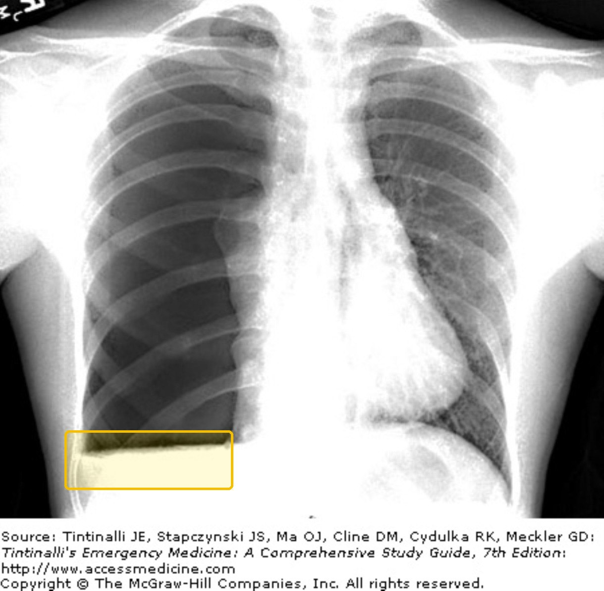 Not picturedChest tube output: no picture on the slides. | |||||||